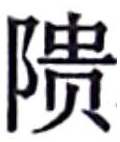

卷一百二十三 大宛列传第六十三
大宛之迹【迹：形迹。此指大宛国的土地山川。】 ，见【见：同“现”。】 自张骞。张骞，汉中人。建元中为郎。是时天子问匈奴降者，皆言匈奴破月氏王，以其头为饮器【饮器：饮水或饮酒用的器皿。】 ，月氏遁逃而常怨仇匈奴，无与【与：结交。】 共击之。汉方欲事灭胡，闻此言，因欲通使。道必更【更：通“经”。】 匈奴中，乃募能使者。骞以郎应募，使月氏，与堂邑氏胡奴甘父俱出陇西。经匈奴，匈奴得之，传诣单于。单于留之，曰：“月氏在吾北，汉何以得往使？吾欲使越，汉肯听我乎？”留骞十余岁，与妻，有子，然骞持汉节不失。
居匈奴中，益宽，骞因与其属亡【亡：逃。】 乡【乡：同“向”。】 月氏，西走数十日至大宛。大宛闻汉之饶财，欲通不得，见骞，喜，问曰：“若欲何之？”骞曰：“为汉使月氏，而为匈奴所闭道。今亡，唯王使人导送我。诚得至，反汉，汉之赂遗王财物不可胜言。”大宛以为然，遣骞，为发导绎【导绎：向导和翻译人员。绎，通“译”。】 。抵康居，康居传致大月氏。大月氏王已为胡所杀，立其太子为王。既臣大夏而居，地肥饶，少寇，志安乐，又自以远汉，殊无报胡之心。骞从月氏至大夏，竟不能得月氏要领。
大宛的形迹，是从张骞时开始发现了解的。张骞，是汉中人，建元年间被选为郎官。当时天子向投降的匈奴人询问情况，都说匈奴将月氏王打败，用他的头颅当作饮酒的器皿，月氏人逃得很远，心中一直对匈奴非常怨恨，但是没有人和他们联合起来攻打匈奴。当时汉朝正打算灭掉匈奴，听到了这些情况，就想派使者联系月氏人。但是，前往月氏必须要经过匈奴境内，于是朝廷就招募一位能够担当使者的人。张骞便以郎官的身份去应征，被派出使月氏，他和堂邑侯家的一个名叫甘父的匈奴奴隶一起从陇西出发了。在路过匈奴境内的时候，他们被匈奴人抓住，送到了单于那里。单于将他们扣留，说道：“月氏在我的北面，汉朝怎么能派使者去呢？我想派人出使越池，汉朝能听任我这样做么？”就这样张骞被匈奴扣留羁押了十多年，匈奴人给他娶妻，还生了儿子，但是张骞手握汉朝的节杖没有失去。
在匈奴居留期间，匈奴对他的看管越来越松，张骞于是就抓住一个机会，带着随从逃往月氏。他们向西走了几十天，终于到了大宛。大宛王早就听说过汉朝物产富饶，想要和汉朝来往但却一直没能如愿，因此他见了张骞很高兴，就问他道：“你要到哪里去？”张骞回答：“我作为汉朝的使者要出使月氏，却被匈奴人扣留。如今我逃了出来，希望大王您派人为我引路，送我去月氏。如果我能到那里，在返回汉朝之后，汉朝肯定会送给您数不胜数的财物。”大宛王表示赞同，就派人一路护送张骞前往康居，同时还安排了向导和翻译。到达康居后，康居又辗转将张骞送到大月氏。当时大月氏王已经被匈奴所杀，他的太子被立为王。将大夏国征服以后，月氏人在那里定居下来，那里土地肥沃，物产丰富，又很少有贼寇，百姓安居乐业，大月氏王认为自己离汉朝太远了，所以没有一点儿想向匈奴复仇的意思。张骞从月氏到大夏，没能掌握月氏的真正动向。
留岁余，还。并【并：通“旁”，靠近。】 南山，欲从羌中【羌中：羌人聚居地。】 归，复为匈奴所得。留岁余，单于死，左谷蠡王攻其太子自立。国内乱，骞与胡妻及堂邑父俱亡归汉。汉拜骞为太中大夫，堂邑父为奉使君。
骞为人强力【强力：坚强勇武。】 ，宽大信人【宽大信人：待人宽厚，能让人信服。】 ，蛮夷爱之。堂邑父故胡人，善射，穷急射禽兽给食。初，骞行时百余人，去十三岁，唯二人得还。
张骞在月氏停留了一年多，然后回国。他沿着南山东行，打算从羌人地区穿过回到长安，但是又被匈奴人抓住。他又在匈奴滞留了一年多，单于去世了，左谷蠡王出兵攻打单于的太子，自立为单于。匈奴发生了内乱，于是张骞带着自己的匈奴妻子还有堂邑父一同逃回了汉朝。汉朝任命张骞为太中大夫，堂邑父为奉使君。
张骞为人坚强有毅力，待人宽厚，让人信服，所以蛮夷人都喜欢他。堂邑父原本是胡人，擅长射箭，陷入困顿的时候就射些飞禽走兽充饥。当初，张骞出发的时候有一百多人，离开十三年，只有他和堂邑父两人回来了。
骞身所至【身所至：亲自到过。】 者大宛、大月氏、大夏、康居，而传闻其旁大国五六，具【具：通“俱”，皆。】 为天子言之。曰：
大宛在匈奴西南，在汉正西，去【去：距离。】 汉可万里。其俗土著，耕田，田【田：种。】 稻麦。有蒲陶【蒲陶：同“葡萄”。】 酒。多善马，马汗血，其先天马子也。有城郭屋室。其属邑大小七十余城，众可数十万。其兵弓矛骑射。其北则康居，西则大月氏，西南则大夏，东北则乌孙，东则扜罙、于窴。于窴之西，则水皆西流，注西海【海：古代大湖名，即今青海湖。】 ；其东水东流，注盐泽。盐泽潜行地下，其南则河源【河源：黄河源头。】 出焉。多玉石，河注中国。而楼兰、姑师邑有城郭，临盐泽。盐泽去长安可五千里。匈奴右方居盐泽以东，至陇西长城，南接羌，鬲汉道焉。
张骞亲自去过的地方有大宛、大月氏、大夏、康居，还听说这些国家周围还有五、六个大国，他把这些情况一一向天子汇报。张骞说：
大宛在匈奴的西南方，在汉朝的正西方，距离汉朝约有一万里。他们的习俗是定居，耕田，种植稻和麦。酿有葡萄酒。当地出产良马，马出汗如血，它们的祖先是天马之子。他们那里建有城镇和住房。归属于大宛的城池大大小小有七十多座，百姓约有几十万。他们使用的兵器是弓和矛，擅长骑马射箭。大宛的北边是康居，西面是大月氏，西南边是大夏，东北边是乌孙，东面是扜罙、于窴。于窴的西边，水都向西流，注入青海湖；于窴东边的水则都向东流，注入盐泽。盐泽的水在地下潜行，它的南边就是黄河的源头。那里盛产玉石，黄河水流向中原。楼兰、姑师这些地方都建有城郭，靠近盐泽。盐泽距离长安约有五千里。匈奴的右翼占据着盐泽以东的土地，一直到陇西长城，南边和羌接壤，阻住了汉朝西去的道路。
乌孙在大宛东北可二千里，行国，随畜，与匈奴同俗。控弦者数万，敢战。故服匈奴，及盛，取其羁属【羁属：被束缚的亲属，实指人质。】 ，不肯往朝会焉。
康居在大宛西北可二千里，行国【行国：没有定居之所的国家。】 ，与月氏大同俗。控弦者八九万人。与大宛邻国。国小，南羁事月氏，东羁事【羁事：被迫服侍别人。】 匈奴。
奄蔡在康居西北可二千里，行国，与康居大同俗。控弦者十余万。临大泽，无崖，盖乃北海【北海：即今里海。】 云。
乌孙位于大宛的东北约二千里的地方，那里的人民不定居，过着游牧的生活，和匈奴的习俗相同。有几万名弓箭手，勇勐善战。以前乌孙臣服匈奴，后来逐渐强大了起来，就和匈奴保持著名义上的隶属关系，却再也不愿去朝拜匈奴了。
康居位于大宛西北边大约二千里的地方，那里的人民不定居，在习俗上和大月氏基本相同。有八九万名弓箭手，和大宛国相邻。国家很小，南边臣服于月氏，东边臣服于匈奴。
奄蔡位于康居西北方大约二千里的地方，那里的人民不定居，和康居的习俗基本相同。有十余万弓箭手，紧邻一望无际的大洼地，没有山崖，大概那就是北海吧。
大月氏在大宛西可二三千里，居妫水【妫水：即今阿姆河。】 北。其南则大夏，西则安息【安息：西域国家，今伊朗境内。】 ，北则康居。行国也，随畜移徙，与匈奴同俗。控弦者可一二十万。故时强，轻匈奴，及冒顿立，攻破月氏。至匈奴老上单于，杀月氏王，以其头为饮器。始月氏居敦煌【敦煌：汉代敦煌郡，今甘肃省敦煌市附近。】 、祁连【祁连：祁连山。】 间，及为匈奴所败，乃远去，过宛，西击大夏而臣之，遂都妫水北，为王庭【王庭：少数民族君主上朝的地方。】 。其余小众不能去者，保南山羌，号小月氏。
安息在大月氏西可数千里。其俗土著，耕田，田稻麦，蒲陶酒。城邑如大宛。其属小大数百城，地方数千里，最为大国。临妫水，有市，民商贾用车及船，行旁国或数千里。以银为钱，钱如其王面，王死辄更钱，效王面焉。画革旁行以为书记。其西则条枝【条枝：古国名，在今伊拉克。】 ，北有奄蔡、黎轩【黎轩：古国名，又名大秦国，在今埃及境内。】 。
条枝在安息西数千里，临西海。暑湿。耕田，田稻。有大鸟，卵如瓮。人众甚多，往往有小君长，而安息役属之，以为外国。国善眩【善眩：擅长魔术。】 。安息长老传闻条枝有弱水、西王母，而未尝见。
大月氏位于大宛西边约二三千里的地方，靠近妫水的北面。它的南边是大夏，西边是安息，北边是康居。百姓不定居，跟随牲畜迁徙，和匈奴风俗相同。约有一二十万弓箭手。大月氏曾经很强大，轻视匈奴，等到冒顿被拥立为单于时，匈奴打败了月氏。到了老上单于时，匈奴将月氏王杀死，用他的头颅作为饮酒器皿。原本月氏在敦煌、祁连之间生活，后来为匈奴打败，于是迁到更远的地方，经过宛，向西进攻大夏并使它臣服，于是就在妫水的北面建都，并设立王庭。没有跟着西行的一小部分人，留下来守卫着南山和羌人居住的地方，被称为小月氏。
安息位于大月氏西边约几千里的地方。那里的百姓过着定居的生活，耕田，种植稻和麦，酿有葡萄酒。安息的城镇和大宛一样。附属于它的城镇大大小小有几百座，国土方圆几千里，是最大的国家。安息紧挨着妫水，有集市，百姓经商用车辆和船只运送货物到附近的国家甚至是几千里以外的地方。安息这个国家用银作为货币，钱币上铸有国王的肖像，国王死了就要更换钱币，再铸上新国王的肖像。在皮革上横着写书信、做记录。安息的西边是条枝，北边有奄蔡、黎轩。
条枝位于安息西面几千里的地方，临近西海。气候炎热、潮湿。百姓从事农耕，种植水稻。那里出产一种大鸟，产的蛋大如酒瓮。人口很多，一般有小君主，在安息的役使管辖之下，将它们视为外围国家。条枝的国人擅长魔术。安息长老相传条枝有弱水、西王母，但是从来没有见过。
大夏在大宛西南二千余里妫水南。其俗土著，有城屋，与大宛同俗。无大君长，往往城邑置小长。其兵弱，畏战。善贾市。及大月氏西徙，攻败之，皆臣畜【畜：畜养。】 大夏。大夏民多，可百余万。其都曰蓝市城【蓝市城：今阿富汗北部的巴里黑。】 ，有市贩贾诸物。其东南有身毒国【身毒国：即印度。】 。
大夏位于大宛西南面二千多里的地方，在妫水的南边。那的百姓过着定居的生活，建有城郭住房，和大宛的习俗相同。这里也没有大君主，往往是在城邑设有小君主。这个国家军事力量很弱小，害怕打仗。这里的人善于经商。后来大月氏西迁的时候，将它打败，又统治了整个大夏国。大夏人口很多，大约有一百多万。大夏的国都叫蓝市城，有贩卖各种货物的集市。大夏国的东南边有身毒国。
骞曰：“臣在大夏时，见邛竹杖、蜀布。问曰：‘安得此？’大夏国人曰：‘吾贾人往市之身毒。身毒在大夏东南可数千里。其俗土著，大与大夏同，而卑湿暑热云。其人民乘象以战。其国临大水焉。’以骞度之，大夏去汉万二千里，居汉西南。今身毒国又居大夏东南数千里，有蜀物，此其去蜀不远矣。今使大夏，从羌中，险，羌人恶之；少【少：稍微。】 北，则为匈奴所得；从蜀宜径【径：便利，方便。】 ，又无寇。”天子既闻大宛及大夏、安息之属皆大国，多奇物，土著，颇与中国同业【同业：相同的作业。】 ，而兵弱，贵汉财物；其北有大月氏、康居之属，兵强，可以赂遗设利朝也。且诚得而以义属之，则广地万里，重九译，致殊俗，威德遍于四海。天子欣然，以骞言为然，乃令骞因【因：就近，顺便。】 蜀犍为发间使，四道并出：出駹，出冉，出徙，出邛、僰，皆各行一二千里。其北方闭氐、筰，南方闭巂、昆明。昆明之属无君长，善寇盗，辄杀略汉使，终莫得通。然闻其西可千余里有乘象国，名曰滇越，而蜀贾奸出物【奸出物：偷运物品出境。】 者或至焉，于是汉以求大夏道始通滇国。初，汉欲通西南夷，费多，道不通，罢之。及张骞言可以通大夏，乃复事西南夷。
张骞说：“我在大夏的时候曾经见到邛地的竹杖、蜀地的布料。我问他们说：‘怎么得到的这些东西？’大夏国的人说：‘我们的商人去身毒买的。身毒位于大夏东南面约几千里。那儿百姓过着定居的生活，习俗和大夏基本相同，并且地势低平，气候潮湿、炎热。那里的人骑着大象作战。那个国家国土紧靠着一条大河’。根据我的推测，大夏距离汉朝一万二千里，在汉朝的西南边。现在身毒国又在大夏东南面几千里，那里有蜀地的物产，那么它与蜀郡相距不会太远。如今出使大夏，从羌人居住区经过，道路难行，羌人又厌恶这样的做法；要是稍稍偏北一些，恐怕会被匈奴人抓住；从蜀郡走应该是最为方便的路，而且没有强盗。”天子听说大宛和大夏、安息这些都是大国，有很多奇珍异宝，百姓过着定居的生活，与汉朝人的生活很相像，同时军事力量又很薄弱，又希望得打汉朝的财物；北边的大月氏、康居这些国家，军队强大，可以通过馈赠利诱来让它们朝拜。况且如果真的能通过道义让它们归属，又能够开拓万里疆土，经过多重翻译，招致风俗各异的国家，汉朝天子的声威和恩德就会遍及四海。天子很高兴，认为张骞的话很有道理，就命令张骞从蜀郡的犍为秘密派出使者，分四路同时出发：一路从駹出发，一路从冉出发，一路由徙起程，一路由邛、僰起程，每一路都行走一二千里。结果北方那一路受阻于氐、筰，南方那一路受阻于嶲、昆明。昆明那里没有君主，强盗横行，常常杀害、掠夺汉朝的使者，汉朝使者最终没有能够通过。但是，听说昆明西边约一千多里地方，有个骑象的国家，名叫滇越，而蜀地的商人私下偷运货物出境贩卖时，有人去过那里，于是汉朝为了寻找通往大夏的道路，就开始和滇国往来。当初，汉朝曾经想过和西南夷沟通，但是因为花费太多，道路又不畅通，于是只好作罢。等张骞说可以由此沟通大夏时，又再次开始经营沟通西南夷了。
骞以校尉从大将军击匈奴，知水草处，军得以不乏，乃封骞为博望侯。是岁元朔六年也。其明年，骞为卫尉，与李将军俱出右北平击匈奴。匈奴围李将军，军失亡多；而骞后期当斩，赎为庶人。是岁汉遣骠骑【骠骑：骠骑将军，指霍去病。】 破匈奴西域数万人，至祁连山。其明年，浑邪王率其民降汉，而金城、河西西并南山至盐泽空无匈奴。匈奴时有侯者【侯者：斥候。】 到，而希矣。其后二年，汉击走单于幕北【幕北：大沙漠以北。幕，通“漠”。】 。
张骞以校尉的身份跟随大将军卫青征讨匈奴，因为他知道哪里有水草，军队因此不会陷于困乏，于是张骞被封为博望侯。这一年是元朔六年（前123年）。第二年，张骞担任卫尉，和李广将军一同从右北平出发去攻打匈奴。匈奴军队围攻李广，李广军队损失惨重；而张骞的军队因为耽误了时间而后至，按律应当被斩首，他花钱赎罪，被贬为庶民。那一年，汉朝派骠骑将军霍去病大败匈奴西域的军队几万人，兵至祁连山下。第二年，浑邪王率领属下百姓投降汉朝，从这以后，金城、河西的西边一直到盐泽一带再也看不到匈奴人的踪迹了。有的时候匈奴会派出侦察兵来，但是这样的情况也很少。这以后的两年，汉朝军队又在漠北赶走了匈奴单于。
是后天子数问骞大夏之属。骞既失侯，因言曰：“臣居匈奴中，闻乌孙王号昆莫，昆莫之父，匈奴西边小国也。匈奴攻杀其父，而昆莫生，弃于野。乌嗛肉蜚其上，狼往乳之。单于怪以为神，而收长之。及壮，使将兵，数有功，单于复以其父之民予昆莫，令长守于西域。昆莫收养其民，攻旁小邑，控弦数万，习攻战。单于死，昆莫乃率其众远徙，中立，不肯朝会匈奴。匈奴遣奇兵击，不胜，以为神而远之，因羁属之，不大攻。今单于新困于汉，而故浑邪地空无人。蛮夷俗贪汉财物，今诚以此时而厚币赂乌孙，招以益东，居故浑邪之地，与汉结昆弟，其势宜听，听则是断匈奴右臂也。既连乌孙，自其西大夏之属皆可招来而为外臣。”天子以为然，拜骞为中郎将，将三百人，马各二匹，牛羊以万数，金币帛直数千巨万，多持节副使，道可使，使遗之他旁国。
这以后，天子多次向张骞询问与大夏有关的事。当时张骞已经失去侯爵，于是说道：“我在匈奴的时侯，听说乌孙王号昆莫，昆莫的父亲是匈奴西边一个小国的国王。匈奴人杀死了他的父亲时，昆莫刚刚出生就被抛弃在野外。乌鸦叼着肉在他的上空飞翔，狼跑去给他哺乳。匈奴单于觉得非常奇怪，以为他是神，于是就收养了他，将他抚养成人。他成年以后，单于又让他领兵打仗，屡有战功，单于又将原来属于他父亲的百姓分给他统领，让他长久地戍守在西边。昆莫聚集他的部众，攻占附近的小城镇，手下有几万名弓箭手，作战娴熟。匈奴单于死后，昆莫就率领部众向远处迁徙，保持中立，不愿再去朝拜匈奴。匈奴发动奇兵攻打昆莫，没有获胜，就以为昆莫有神灵相助而远远地避开了他，对他还是用笼络的手段来保持名义上的隶属关系，也不再发动大的进攻了。现在匈奴单于刚为汉朝所困，而原来浑邪王的领地又没人守卫。蛮夷的习俗向来是贪图汉朝的财物，如果我们现在趁这个时机送给乌孙王大量的金银，招引他一点点东迁，在原属浑邪王的土地上居住，和汉朝结为兄弟，从情势上看，他应该能同意的，如果他同意，就是将匈奴右臂膀斩断了。只要联合上了乌孙，那么它以西的大夏等国都可以招来而作为藩臣。”天子认为他说的有道理，就任命张骞为中郎将，率领三百人，每人两匹马，几万只牛羊，带着价值几千万的钱财、布帛，同时派出很多持节杖的副使，如果道路可通，就派他们到附近的国家出使。
骞既至乌孙，乌孙王昆莫见汉使如单于礼，骞大惭，知蛮夷贪，乃曰：“天子致赐，王不拜则还赐。”昆莫起拜赐，其它如故。骞谕使指曰：“乌孙能东居浑邪地，则汉遣翁主【翁主：诸侯的女儿。】 为昆莫夫人。”乌孙国分，王老，而远汉，未知其大小，素服属匈奴日久矣，且又近之，其大臣皆畏胡，不欲移徙，王不能专制。骞不得其要领。昆莫有十余子，其中子曰大禄，强，善将众，将众别居万余骑。大禄兄为太子，太子有子曰岑娶，而太子蚤【蚤：通“早”。】 死。临死谓其父昆莫曰：“必以岑娶为太子，无令他人代之。”昆莫哀而许之，卒以岑娶为太子。大禄怒其不得代太子也，乃收【收：收罗。】 其诸昆弟，将其众畔【畔：通“叛”，背叛，造反。】 ，谋攻岑娶及昆莫。昆莫老，常恐大禄杀岑娶，予岑娶万余骑别居，而昆莫有万余骑自备，国众分为三，而其大总取羁属昆莫，昆莫亦以此不敢专约【专约：做主相约。】 于骞。
骞因分遣副使使大宛、康居、大月氏、大夏、安息、身毒、于窴、扜 及诸旁国。乌孙发导译送骞还，骞与乌孙遣使数十人，马数十匹报谢，因令窥汉，知其广大。
及诸旁国。乌孙发导译送骞还，骞与乌孙遣使数十人，马数十匹报谢，因令窥汉，知其广大。
骞还到，拜为大行，列于九卿。岁余，卒。
张骞到了乌孙后，乌孙王昆莫接见汉朝使者时采用的是拜见匈奴单于的礼节，张骞心中羞愧且愤怒，他清楚蛮夷的天性就是贪婪，于是说道：“天子赠送礼物，大王如果不拜谢，那就把礼物退回来。”于是昆莫起身拜谢赏赐，其余的还是一样。张骞将自己这次出使的意图和昆莫说了：“如果乌孙能够向东迁徙到浑邪王的土地上，那么汉朝就将一位诸侯的女儿嫁到昆莫做夫人。”当时乌孙国已经分裂，国王年纪又大，又与汉朝相距太远，并不清楚汉朝的大小，他们臣服于匈奴时间已久，与匈奴相距很近，他们的大臣都很惧怕匈奴，不愿迁走，国王自己做不了决定。就这样，张骞没有得到昆莫的明确表态。昆莫有十多个儿子，其中一个儿子叫大禄，很强悍，善于率领部众，他带领一万多骑兵在别处驻扎。大禄的哥哥是太子，太子有个儿子叫岑娶，而太子很早就去世了。他临死时对父亲昆莫说：“一定要立岑娶为太子，不可以让别人替代他。”昆莫很悲伤，就答应了他，最终立岑娶为太子。大禄因为自己没有被立为太子而愤怒，于是就联合诸多兄弟，率领部下造反了，打算进攻岑娶和昆莫。昆莫年纪大了，总是担心岑娶被大禄杀害，于是分给岑娶一万多骑兵，让他去别处驻扎，而昆莫还有一万多骑兵用以自保，他的国家、百姓就这样被一分为三，大体名义上还是都归属于昆莫，因此昆莫也不敢单独做主，和张骞定约。
于是张骞又分别派出副使出使大宛、康居、大月氏、大夏、安息、身毒、于窴、扜 以及周边的国家。乌孙国派出向导和翻译送张骞回国，张骞和乌孙派出的使者几十人，几十匹马回国答谢，也趁这个机会让他们看看汉朝，了解汉朝的强大。
以及周边的国家。乌孙国派出向导和翻译送张骞回国，张骞和乌孙派出的使者几十人，几十匹马回国答谢，也趁这个机会让他们看看汉朝，了解汉朝的强大。
张骞返回朝廷，被任命为大行，位列九卿。一年多以后，张骞去世。
乌孙使既见汉人众富厚，归报其国，其国乃益重汉。其后岁余，骞所遣使通大夏之属者皆颇与其人俱来，于是西北国始通于汉矣。然张骞凿空，其后使往者皆称博望侯，以为质【质：信任。】 于外国，外国由此信之。
自博望侯骞死后，匈奴闻汉通乌孙，怒，欲击之。及汉使乌孙，若出其南，抵大宛、大月氏相属【相属：连续不断，络绎不绝。】 ，乌孙乃恐，使使献马，愿得尚汉女翁主为昆弟。天子问群臣议计，皆曰“必先纳聘，然后乃遣女”。初，天子发书【发书：打开书。】 《易》，云“神马当从西北来”。得乌孙马好，名曰“天马”。及得大宛汗血马，益壮，更名乌孙马曰“西极”，名大宛马曰“天马”云。而汉始筑令居以西，初置酒泉郡以通西北国。因益发使抵安息、奄蔡、黎轩、条枝、身毒国。而天子好宛马，使者相望于道。诸使外国一辈大者数百，少者百余人，人所赍操大放【大放：大致相仿。放，通“仿”。】 博望侯时。其后益习而衰少焉。汉率一岁中使多者十余，少者五六辈，远者八九岁，近者数岁而反。
乌孙的使者看到汉朝人口众多、物产丰富，回去之后报告给国王，于是乌孙国对汉朝更重视了。这以后一年多，张赛派出使大夏等国的使者，渐渐开始和其他国家的人一同回来，于是西北各国开始和汉朝有了来往。由于这种互通往来是张骞开创的，因此以后出使西域的人都自称“博望侯”，以此来取得外国的信任，而外国也因此而信任他们。
自从博望侯张骞去世以后，匈奴听说汉朝和乌孙互通往来，非常生气，打算攻打乌孙。等到汉朝出使乌孙，并且还从乌孙的南部出发，连续不断到达大宛、大月氏等国，乌孙于是害怕起来，派出使者向汉朝进献马匹，希望能够娶一位汉朝诸侯的女儿并结成兄弟之国。天子向大臣们征求意见，大臣们都说“一定要先让他们送上聘礼，然后才可以把诸侯女儿嫁过去”。起初，天子打开《易》进行占卜，卜辞上说“神马当从西北来”。汉朝得到了乌孙的好马，将其命名为“天马”。后来又得到了大宛的汗血马，比乌孙马更加健壮，于是就将乌孙马改名为“西极”，将大宛马命名为“天马”。这时，汉朝开始修筑令居以西的长城，又设置酒泉郡，开通和西北各国的交往。又派出更多的使者出使安息、奄蔡、黎轩、条枝、身毒各国。而天子特别喜欢大宛马，于是出使大宛的使者更是络绎不绝。那些出使外国的使者，人数多的有几百人，人数少的也有一百多人，人们所携带的东西与博望侯张骞那时大致相同。后来次数多了也就越来越熟悉了，人数也随之渐渐减少。一年中汉朝要派出去的使者，多的时候有十几次，少的时候也有五六次。去远的地方，使者得八九年回来，近的地方也要几年才返回。
是时汉既灭越，而蜀、西南夷皆震，请吏入朝。于是置益州、越西、牂柯、沈黎、汶山郡，欲地接以前通大夏。乃遣使柏始昌、吕越人等岁十余辈，出此初郡抵大夏，皆复闭【闭：阻碍。】 昆明【昆明：少数民族部落。位于今云南省洱海南部地区。】 ，为所杀，夺币财，终莫能通至大夏焉。于是汉发三辅罪人，因巴蜀士数万人，遣两将军郭昌、卫广等往击昆明之遮汉使者，斩首虏数万人而去。其后遣使，昆明复为寇，竟莫能得通。而北道酒泉抵大夏，使者既多，而外国益厌汉币【汉币：汉朝的布帛财物。】 ，不贵其物。
当时汉朝已经将南越灭掉，蜀、西南夷都震惊不小，纷纷派出官员入朝表示诚意。于是汉朝设置了益州、越西、牂柯、沈黎、汶山郡，希望土地相连直到大夏。于是汉朝每年派出包括柏始昌、吕越人等人在内的使者一年有十几次，从这几个新设的郡出发前往大夏，但是又都被昆明阻拦，使者被杀，钱物被抢，终究没能到达大夏。汉朝于是征发三辅的囚犯，加上巴蜀几万名士兵，派郭昌、卫广两位将军，前去攻打昆明拦杀汉朝使者的人，汉军杀死和俘虏几万人后就撤走了。以后汉朝又派出使者，昆明依旧劫掠杀害，通往大夏的道路最终也没打通。而北边取道酒泉去大夏的使者已经很多，外国人对汉朝的布帛财物也越来越厌恶了，不再重视这些东西。
自博望侯开外国道以尊贵，其后从吏卒皆争上书言外国奇怪利害，求使【求使：请求出使。】 。天子为其绝远，非人所乐往，听其言，予节，募吏民毋问所从来，为具备人众遣之，以广其道。来还【来还：往来出使的人。】 不能毋侵盗币物，及使失指【使失指：背离出使的宗旨。】 ，天子为其习之，辄覆案【覆案：深究罪行。】 致重罪，以激怒令赎，复求使。使端【使端：请求出使的人所编织的理由、借口。】 无穷，而轻犯法。其吏卒亦辄复盛推外国所有，言大者予节，言小者为副，故妄言无行之徒皆争效之。其使皆贫人子，私【私：据为己有。】 县官赍物，欲贱市【贱市：低价出售。】 以私其利外国。外国亦厌汉使人人有言轻重，度汉兵远不能至，而禁其食物以苦汉使。汉使乏绝积怨，至相攻击。而楼兰、姑师小国耳，当空道【当空道：处于交通要道之上。空，通“孔”。】 ，攻劫汉使王恢等尤甚。而匈奴奇兵时时遮击使西国者。使者争遍言外国灾害，皆有城邑，兵弱易击。于是天子以故遣从骠侯破奴将属国骑及郡兵数万，至匈河水，欲以击胡，胡皆去。其明年，击姑师，破奴与轻骑七百余先至，虏楼兰王，遂破姑师。因举兵威以困乌孙、大宛之属。还，封破奴为浞野侯。王恢数使，为楼兰所苦，言天子，天子发兵令恢佐破奴击破之，封恢为浩侯。于是酒泉列亭鄣【亭鄣：了望台和碉堡。】 至玉门矣。
自从博望侯张骞凭借打通和外国的来往道路而尊贵起来，那些后来跟着出使的官吏和士兵争相上书，讲述外国的奇闻异事和奇珍异宝，请求出使。天子认为外国路途遥远，不是每个人都愿意去的，于是就接受他们的要求，颁给他们使者的符节，招募官吏和百姓时也不再问他们的出身，让他们聚集人手便派他们前往，广开出使外国的门路。那些往来出使的人不能不做下侵吞布帛财物的事情，有的甚至背离了出使的宗旨，天子因为他们熟悉西域情况，所以通常就深究他们的罪行判成重罪，以激励他们再次出使来立功赎罪。这样一来，出使的事端无穷无尽，他们也很轻率地就触犯法律。那些官吏士卒也常常大力称赞外国的见闻，话说得夸张一点的人就被授予正使，话说得谨慎一点的人就被授予副使，所以那些胡说八道、道德败坏的人都争相仿效。那些出使的人出身都很贫穷，将朝廷赠送给西域各国的礼物据为己有，打算低价出售给外国以谋取私利。外国人也讨厌汉朝的使者各执一词、轻重不一，揣度汉朝军队相距太远，鞭长莫及，于是断绝了汉朝使者的食物以此刁难。汉朝使者因为食物断绝而积怨，以至于相互攻击。楼兰、姑师是小国，处于交通要道之上，攻击劫持汉朝使者王恢等尤其厉害。而匈奴的偷袭骑兵更是经常拦击出使西域的使者。使者争相控诉外国的危害，虽然也有城镇，但是兵力薄弱，容易攻取。于是，天子派从骠侯赵破奴率领属国骑兵及各郡的几万名士兵，来到匈河水边，想要进攻匈奴，但是匈奴军队撤走了。第二年，汉军攻打姑师，赵破奴率领七百轻骑兵率先到达，俘获了楼兰王，就这样攻陷了姑师。汉军又挟大胜之余威围困乌孙、大宛等国。返回汉朝后，赵破奴被封为浞野侯。王恢数次出使，吃尽了楼兰的苦头，于是将情况汇报给天子，天子派王恢率领军队辅佐赵破奴击破楼兰，王恢被封为浩侯。于是汉朝在酒泉修筑了望台和碉堡，一直修到玉门关。
乌孙以千匹马聘汉女，汉遣宗室女江都翁主【翁主：诸侯王女儿的封号。】 往妻乌孙，乌孙王昆莫以为右夫人。匈奴亦遣女妻昆莫，昆莫以为左夫人。昆莫曰“我老”，乃令其孙岑娶妻翁主。乌孙多马，其富人至有四五千匹马。
初，汉使至安息，安息王令将二万骑迎于东界。东界去王都数千里。行比至，过数十城，人民相属【相属：相连。】 甚多。汉使还，而后发使随汉使来观汉广大，以大鸟卵及黎轩善眩人【善眩人：魔术师、幻术师。】 献于汉。及宛西小国驩潜、大益，宛东姑师、扜罙、苏薤之属，皆随汉使献见【献见：献上礼物并拜见。】 天子。天子大悦。
而汉使穷河源，河源出于窴，其山多玉石，采来，天子案古图书，名河所出山曰昆仑云。
乌孙用一千匹马当作聘礼来娶汉朝女子，汉朝派宗室女子江都翁公嫁给乌孙王为妻，乌孙王昆莫立她为右夫人。匈奴也送来一个女子嫁给昆莫，昆莫立她为左夫人。昆莫说“我年老了”，于是让自己的孙子岑娶江都翁主为妻。乌孙盛产马匹，这里富人家能拥有四五千匹马。
起初，汉朝使者出使到了安息，安息王派人率领二万骑兵在东部边界上迎接。东部边界距离安息都城有几千里远。到达王城，要经过几十座城镇，百姓遍布，人口很多。汉朝使者回国，安息也派使者跟着来，看看汉朝领土的广大，还献上了大鸟蛋和黎轩的魔术师。至于大宛西边的小国驩潜、大益，大宛东边的姑师、扜罙、苏薤等国，也都派人跟随汉朝使者来到汉朝，献上礼物并拜见天子。天子非常高兴。
汉朝使者探寻黄河的源头，黄河的河源在于窴，那里的山盛产玉石，使者们采运了玉石回来，天子考察古代的图书，将黄河发源的山命名为昆仑山。
是时上方数巡狩海上，乃悉从【悉从：尽数跟从。】 外国客，大都多人则过之，散财帛以赏赐，厚具【厚具：丰富的物资。】 以饶给之，以览示汉富厚焉。于是大觳抵【觳抵：同“角抵”，摔角、相扑之类的活动。】 ，出奇戏诸怪物，多聚观者，行赏赐，酒池肉林，令外国客遍观各仓库府藏之积，见汉之广大，倾骇之。及加其眩者之工，而觳抵奇戏岁增变，甚盛益兴，自此始。
西北外国使，更来更去【更来更去：越发频繁地往来。】 。宛以西，皆自以远，尚骄恣晏然【晏然：神态安然。】 ，未可诎【诎：同“屈”，谦恭、谦卑。】 以礼羁縻【羁縻：束缚、控制。】 而使也。自乌孙以西至安息，以近匈奴，匈奴困月氏也，匈奴使持单于一信【信：凭证、信物。】 ，则国国传送食，不敢留苦；及至汉使，非出币帛不得食，不市【市：购买。】 畜不得骑用。所以然者，远汉，而汉多财物，故必市乃得所欲，然以【以：由于，因为。】 畏匈奴于汉使焉。宛左右以蒲陶为酒，富人藏酒至万余石，久者数十岁不败。俗嗜酒，马嗜苜蓿。汉使取其实来，于是天子始种苜蓿、蒲陶肥饶地。及天马多，外国使来众，则离宫别观旁尽种蒲萄、苜蓿极望【极望：看到不到边际。】 。自大宛以西至安息，国虽颇异言，然大同俗，相知言。其人皆深眼，多须髯，善市贾，争分铢。俗贵女子，女子所言而丈夫乃决正【决正：决定。】 。其地皆无丝漆，不知铸钱器。及汉使亡卒降，教铸作他兵器。得汉黄白金，辄以为器，不用为币。
当时皇上多次巡视沿海地区，每次都让外国的客人尽数跟随，只要是人多的大城市就都去经过，还赏赐给他们财物布帛，置办丰厚的酒肴款待，以此来展示汉朝的富有。举行摔角比赛，展示奇妙的游戏和各种奇异的物品，围观的人很多，皇上就大肆赏赐，聚酒成池，挂肉成林，让外国客人参观各地仓库里的储藏物资，以此表现汉朝的博大，让他们倾慕、吃惊不已。至于魔术技巧的增加，摔角和奇妙的游戏每年都有新花样，各种技艺的兴旺，都是从这时开始的。
西北地区的外国使者，越发频繁地往来。大宛以西的国家，都认为自己离汉朝很远，还是那样骄傲放纵，满不在乎，汉朝也无法用武力使他们折服，只能用礼来笼络他们。从乌孙以西到安息这些国家，因为和匈奴很近，匈奴曾经胁迫月氏国，匈奴使者手中拿着单于的一件信物，那么各个国家都要为他提供食物，不敢阻留而让其受一点苦。至于汉朝的使者，自己不出钱就没有食物，自己不买马就没有坐骑。之所以会有这样的情况，就是因为这里离汉朝太远了，而且汉朝又十分富庶，所以一定要出钱才能得到想要的东西，因为他们畏惧匈奴的使者胜过汉朝的使者。大宛附近的国家都用葡萄酿酒，富人家里储藏的酒多的可达一万多石，贮藏年代久的几十年都不会坏。那里的风俗喜欢饮酒，马喜欢吃苜蓿。汉朝使者带回来这些植物的种子，天子就开始在肥沃的土地上种植苜蓿、葡萄。到得到的天马多了，外国的使者来得多了，那离宫别观旁边都种上了葡萄、苜蓿，密密麻麻、一望无际。从大宛以西到安息，各国虽然使用着不一样的语言，但是风俗基本相同，彼此可以相互了解。那里人都是眼窝深陷，胡须浓密，很善于做买卖，锱铢必较。当地风俗中女子地位很高，女子说的话就是丈夫做决定的依据。那里都没有丝和漆，不懂得如何铸造钱币和器皿。直到有汉朝使者和逃亡士卒投降了他们以后，才教给他们制作兵器和器皿的技术。当地人得到了汉朝的黄金、白银，一般都是用来铸造器皿，而不是钱币。
而汉使者往既多，其少从【少从：从少年时期就跟从。】 率多进熟于天子，言曰：“宛有善马在贰师城，匿不肯与汉使。”天子既好宛马，闻之甘心【甘心：心动。】 ，使壮士车令等持千金及金马以请宛王贰师城善马。宛国饶汉物，相与谋曰：“汉去我远，而盐水【盐水：罗布泊。】 中数败，出其北有胡寇，出其南乏水草。又且往往而绝邑，乏食者多。汉使数百人为辈来，而常乏食，死者过半，是安能致大军乎？无奈我何。且贰师马，宛宝马也！”遂不肯予汉使。汉使怒，妄言【妄言：骂人。】 ，椎金马【椎金马：砸毁了带来的金马。】 而去。宛贵人怒曰：“汉使至轻我！”遣汉使去，令其东边郁成遮攻杀汉使，取其财物。于是天子大怒。诸尝使宛姚定汉等言宛兵弱，诚以汉兵不过三千人，强弩射之，即尽虏破宛矣。天子已尝使浞野侯攻楼兰，以七百骑先至，虏其王，以定汉等言为然，而欲侯宠姬李氏，拜李广利为贰师将军，发属国六千骑，及郡国恶少年数万人，以往伐宛。期【期：目的。】 至贰师城取善马，故号“贰师将军”。赵始成为军正【军正：军中的司法官员。】 ，故浩侯王恢使导军，而李哆为校尉，制军事。是岁太初元年也。而关东蝗大起，蜚西至敦煌。
汉朝使者出使西域的多了以后，那些从少年时期就跟着出使国外的大多都向天子进言久了，熟悉了天子，他们和天子说：“大宛在贰师城有好马，但是却被他们藏起来，不肯给汉朝使者。”天子特别喜欢大宛马，听说这件事后很心动，于是就派壮士车令等人带着千金和金马，到大宛国向大宛王换取贰师城的好马。大宛国中已经有很多汉朝的物品，众人商议说：“汉朝距离我们很远，而在盐泽屡次遭遇失败，如果从北边来的话，还会有匈奴侵扰，从南边来的话又缺少水草。并且途中都没有城镇，缺少饮食。汉朝使者每次来几百人来，常常由于缺少食物而有一半以上的人死去，这样的情况下，汉朝怎么能派大批的军队前来呢？他们拿我们没有办法。况且贰师城的马，是大宛的宝马！”于是大宛不肯将马交给汉朝使者。汉朝使者非常生气，破口大骂，用椎将金马砸毁后离开。大宛的贵族官员也很生气地说道：“汉朝的使者太轻视我们了！”他们遣送汉使者离开，命令大宛东边的郁成国将汉朝使者拦下并杀死，将使者的财物都抢走了。这时天子大怒。姚定汉等几位曾经出使过大宛的人说大宛军事力量薄弱，只需三千汉军，用强弓劲弩射杀他们，就能将大宛的军队全都抓了俘虏。因为天子曾经让浞野侯去进攻楼兰，他率领七百名骑兵先到了楼兰，就俘获了楼兰王，所以天子认为姚定汉等人的话是正确的，还想封宠姬李氏为侯，于是封李广利为贰师将军，徵调属国六千名骑兵，还有各郡国品行不佳的少年几万人，由李广利率领前往征讨大宛。天子希望到贰师城获得好马，所以封李广利为“贰师将军”。赵始成任军正，原来的浩侯王恢为军队的向导，而李哆任校尉，掌管军中大事。这一年是太初元年（前104年）。当时关东出现蝗灾，蝗灾蔓延到西边的敦煌。
贰师将军军既西过盐水，当道【当道：位于交通要道上。】 小国恐，各坚城守，不肯给食。攻之不能下。下者得食，不下者数日则去。比至郁成，士至者不过数千，皆饥罢。攻郁成，郁成大破之，所杀伤甚众。贰师将军与哆、始成等计：“至郁成尚不能举，况至其王都乎？”引兵而还。往来二岁。还至敦煌，士不过什一二。使使上书言：“道远多乏食。且士卒不患战，患饥。人少，不足以拔宛。愿且罢兵，益发而复往。”天子闻之，大怒，而使使遮【庶：拦阻。】 玉门，曰军有敢入者辄斩之！贰师恐，因留敦煌。
贰师将军李广利的军队已经向西渡过了盐泽，沿途的小国都惊恐不已，各自坚守城池，不肯供给食物。汉军攻打它们，却无法攻下。攻下城来就有食物吃，攻不下的，过几天就得撤走。等到了郁成，汉军士兵已经只有几千人了，而且都饥饿疲惫。汉军攻打郁成，被郁成军队击败，汉军伤亡惨重。贰师将军李广利和李哆、赵始成等人商议：“到了郁成都没能够攻下，更何况他们的国都？”于是率军撤回，这一去一回就花费了两年的时间。汉军返回敦煌的时候，士兵已经不足出发时的十分之一二。李广利派出使者去向天子报告：“道路遥远，粮草匮乏。而且士兵们怕的不是打仗，而是饥饿。汉军人少，无法攻克大宛。希望暂时退兵，增派军队再去讨伐。”天子听后很生气，就派使者把守玉门关，说擅自进入玉门关的军士立即处死！贰师将军李广利非常害怕，只好滞留在敦煌。
其夏，汉亡浞野之兵二万余于匈奴。公卿及议者皆愿罢击宛军，专力攻胡。天子已业【已业：已经。】 诛宛，宛小国而不能下，则大夏之属轻汉，而宛善马绝不来，乌孙、仑头易苦汉使矣，为外国笑。乃案言伐宛尤不便者邓光等，赦囚徒材官【材官：勇勐健壮的武卒。】 ，益发恶少年及边骑，岁余而出敦煌者六万人，负私从者【负私从者：置办行装自愿从军的人。】 不与。牛十万，马三万余匹，驴骡橐它【橐它：骆驼。】 以万数。多赍粮，兵弩甚设【设：多，充足。】 ，天下骚动，传相奉伐宛，凡五十余校尉。宛王城中无井，皆汲城外流水，于是乃遣水工徙其城下水空【水空：水道，水路。】 以空其城。益发戍甲卒十八万，酒泉、张掖北，置居延、休屠以卫酒泉，而发天下七科适【适：通“谪”，罚罪。】 ，及载糒【糒：干粮。】 给贰师。转车人徒相连属至敦煌。而拜习马者二人为执驱校尉，备破宛择取其善马云。
那年夏天，汉朝在与匈奴的作战中损失了两万多浞野侯的士卒。公卿和议事的大臣都希望停止进攻大宛，集中力量攻打匈奴。天子认为，既然已经攻打大宛，那么连大宛的小国都打不下来，大夏等国就会看不起汉朝，而大宛的良马也绝不会得到，乌孙、仑头更会欺辱汉朝使者，被外国所耻笑了。天子于是就查办了说攻打大宛不利的邓光等人，又赦免囚犯和武官，又增调品行不佳的少年以及边地骑兵，准备了一年多的时间，汉军从敦煌出发的就多达六万人，这还没有将自带装备自愿从军的人包括在内。这些士兵携带十万头牛，三万多匹马，驴、骡、骆驼数以万计。汉军还带了很多粮食，兵器、弓弩都很齐备。当时全天下都为之骚动不安，相互转告奉命攻打大宛，军队总共有五十多名校尉。大宛都城中没有水井，饮水都要汲取城外的流水，于是汉军派水工改变了城的水道，让城内无水可用。汉朝还增调了十八万甲兵到酒泉、张掖北边，设置居延、休屠两个县以拱卫酒泉。汉朝又调遣全国七种犯罪的人，运送干粮供给贰师将军的军队。转运物资的人络绎不绝，一直到敦煌。又任命两位熟习马匹的人做执驱校尉，准备攻克大宛后好挑选良马。
于是贰师后复行，兵多，而所至小国莫不迎，出食给军。至仑头，仑头不下，攻数日，屠之。自此而西，平行【平行：顺利前行。】 至宛城，汉兵到者三万人。宛兵迎击汉兵，汉兵射败之，宛走入葆乘【乘：登上。】 其城。贰师兵欲行攻郁成，恐留行【留行：延误行程。】 而令宛益生诈，乃先至宛，决【决：决开，使决堤。】 其水源，移之，则宛固已忧困。围其城，攻之四十余日，其外城坏，虏宛贵人勇将煎靡。宛大恐，走入中城。宛贵人相与谋曰：“汉所为攻宛，以王毋寡匿善马而杀汉使。今杀王毋寡而出善马，汉兵宜解【解：解围离开。】 ；即不解，乃力战而死，未晚也。”宛贵人皆以为然，共杀其王毋寡，持其头遣贵人使贰师，约曰：“汉毋攻我。我尽出善马，恣所取，而给汉军食。即不听，我尽杀善马，而康居之救且至。至，我居内，康居居外，与汉军战。汉军熟计【熟计：认真考虑。】 之，何从？”是时康居候视汉兵，汉兵尚盛，不敢进。贰师与赵始成、李哆等计：“闻宛城中新得秦人，知穿井，而其内食尚多。所为来，诛首恶者毋寡。毋寡头已至，如此而不许解兵，则坚守，而康居候汉罢而来救宛，破汉军必矣。”军吏皆以为然，许宛之约。宛乃出其善马，令汉自择之，而多出食食给汉军。汉军取其善马数十匹。中马以下牡牝三千余匹，而立宛贵人之故待遇汉使善者名昧蔡以为宛王，与盟而罢兵。终不得入中城。乃罢而引归。
就这样，贰师将军李广利再次出征，由于士兵很多，所以经过的小国没有不迎接的，纷纷都给汉军献上食物。汉军抵达仑头，仑头国不肯投降，攻打几天以后，仑头城坡，汉军大肆屠杀。此后再向西去，汉军没有遇到什么阻拦而顺利到达大宛王城，这时汉军有三万人。大宛军队迎战汉军，汉军射箭将其打败，大宛军队逃回城里，凭城坚守，贰师将军的军队准备攻打郁成，又担心停滞不前会让大宛想出什么诡诈的办法，于是先到大宛城，挖开它的水源引到别的地方，大宛深受其害。汉军将大宛城包围，攻打了四十多天，外围城墙毁坏，大宛贵族官员中的勇将煎靡被俘。大宛人非常害怕，都逃到了中城。大宛贵族官员一起商量对策，说道：“汉朝之所以进攻大宛，就是因为大宛王毋寡藏匿了良马，还杀死了汉朝使者。现在如果杀了大宛王毋寡，再献出良马，汉军就会解围离开；如果汉军不解围离开，那我们再奋力战斗而死也不晚。”大宛的贵族官员们都认为有道理，于是一起将国王毋寡杀死，派出其中一位贵族官员拿着国王的头到贰师将军李广利那里，和他约定说：“汉军不要攻打我们。我们献出所有良马，任由你们挑选，还为汉军提供食物。如果汉军不同意，我们就把良马全部杀掉，而康居的救兵也快要到了。救兵一来，我们在里面，康居军队在外面，内应外合同汉军作战。希望汉军仔细考虑我们的建议，怎么样？”这时，康居的侦察兵也打探到汉军的情况，见汉军还非常强盛，也不敢再前进。贰师将军李广利和赵始成、李哆等人商量说：“听说大宛城内刚找到了汉人，懂得挖井，此外他们城中的粮食还有很多。我们之所以来到这里，就是为了诛杀罪大恶极的毋寡。如今毋寡的头已经在这了，如果这样而还不答应撤围，那么他们就顽强抵抗坚守，而康居的军队等到汉军疲乏就会救援大宛，肯定会打败我们。”汉军的军官都认为是这样的道理，于是同意了大宛的要求。于是大宛献出他们的良马，让汉人自己来挑选，又拿出很多食物送给汉军。汉军挑走了几十匹良马，以及中等以下的公马和母马三千多匹，还立了大宛贵族中一位以前与汉使者关系和善的名叫昧蔡的人为大宛王，和他订立盟约撤兵而还。汉军始终也没有进入大宛的中城，就撤军回了汉朝。
初，贰师起敦煌西，以为人多，道上国不能食，乃分为数军，从南北道。校尉王申生、故鸿胪壶充国等千余人，别【别：另外。】 到郁成。郁成城守，不肯给食其军。王申生去【去：离开。】 大军二百里，偩【偩：仰仗。】 而轻之，责郁成。郁成食不肯出，窥知申生军日少，晨用三千人攻，戮杀申生等，军破，数人脱亡，走贰师。贰师令搜粟都尉上官桀往攻破郁成。郁成王亡走康居，桀追至康居。康居闻汉已破宛，乃出郁成王予桀，桀令四骑士缚守诣大将军。四人相谓曰：“郁成王汉国所毒【毒：怨恨。】 ，今生将去，卒失大事。”欲杀，莫敢先击。上邽骑士赵弟最少，拔剑击之，斩郁成王，赍头。弟、桀等逐及大将军。
起初，贰师将军李广利从敦煌西边出发时，认为人员太多，沿途的国家无法供给充足的食物，于是兵分几路，分别从南、北两路前进。校尉王申生、原鸿胪壶充国等率领一千多人，从另一条路去了郁成。郁成人坚守城池，拒绝为汉军提供食物。王申生离开大部队二百里远，自恃有大军做后盾而轻视郁成，责备郁成不提供粮草。郁成人拒绝献出粮食，又侦查到王申生的军中人数每天都在减少，就在一天早晨，出动三千人突袭汉军，将王申生等人杀死。汉军大败，只有几个人逃了出来，跑到了贰师将军李广利那里。李广利命令搜粟都尉上官桀率军前去打败郁成。郁成王逃到了康居，上官桀追击到康居。康居人听说汉军已经攻克了大宛，于是把郁成王献给上官桀，上官桀命令四名骑兵把郁成王捆好，押解到贰师将军那里。四名骑兵彼此商议道：“郁成王是汉朝最为痛恨的人，如果途中逃走的话，就耽误大事了。”他们想要杀了郁成王，但是没人敢先下手。上邽骑士赵弟年纪最小，他拔剑砍去，将郁成王杀死，带上他的人头。赵弟、上官桀等人追赶上了贰师将军的大部队。
初，贰师后行，天子使使告乌孙，大发兵并力击宛。乌孙发二千骑往，持两端，不肯前。贰师将军之东【东：东归。】 ，诸所过小国闻宛破，皆使其子弟从军入献，见天子，因以为质焉。贰师之伐宛也，而军正赵始成力战，功最多；及上官桀敢深入，李哆为谋计，军入玉门者万余人，军马千余匹。贰师后行，军非乏食，战死不能多，而将吏贪，多不爱士卒，侵牟【侵牟：侵吞。】 之，以此物故【物故：死。】 众。天子为万里而伐宛，不录过【录过：计较过失。】 ，封广利为海西侯。又封身斩郁成王者骑士赵弟为新畤侯。军正赵始成为光禄大夫，上官桀为少府，李哆为上党太守。军官吏为九卿者三人，诸侯相、郡守、二千石者百余人，千石以下千余人。奋行者官过其望，以适过行者皆绌其劳。士卒赐直四万金。伐宛再反，凡四岁而得罢焉。
起初，贰师将军再次出兵大宛时，天子曾派使者告诉乌孙，要求他们多派兵力和汉军联合进攻大宛。乌孙派出二千名骑兵，却持观望态度，不肯前进。贰师将军李广利胜利东归，沿途的那些小国听说大宛被破，都派出子弟跟着汉军到汉朝进贡，拜见皇上，顺便留在汉朝作人质。贰师将军李广利征讨大宛，军正赵始成奋力作战，功劳最大；上官桀勇敢地深入作战，李哆多次出谋划策，所以汉军班师进入玉门关时还有一万多人，战马有一千多匹。贰师将军第二次出兵，军中并不缺乏粮食，战死的人也不算多，但是他手下的官吏都十分贪婪，大都不爱惜士兵，侵吞军饷，所以死的人很多。天子因为他们是万里远征大宛，并没有追究他们的过错，封李广利为海西侯。又封亲自斩杀郁成王的骑兵赵弟为新畤侯。任命军正赵始成为光禄大夫，上官桀为少府，李哆为上党太守。军官中位列九卿的有三人，任诸侯相、郡守、二千石的有一百多人，任一千石以下的有一千多人。对于自愿参军的人的封赏都超过他们的预期，因为犯罪而征召去当兵的人都被赦免罪行，不计功劳。赏赐士卒共四万金。汉军两次攻打大宛，一共享了四年才宣告结束。
汉已伐宛，立昧蔡为宛王而去。岁余，宛贵人以为昧蔡善谀【善谀：善于献媚讨好。】 ，使我国遇屠，乃相与杀昧蔡，立毋寡昆弟曰蝉封为宛王，而遣其子入质于汉。汉因使使赂赐【赂赐：赏赐，收买。】 以镇抚之。
而汉发使十余辈至宛西诸外国，求奇物，因风览【风览：宣扬、宣传。】 以伐宛之威德。而敦煌置酒泉都尉，西至盐水，往往有亭【亭：亭鄣。】 。而仑头有田卒数百人，因置使者护田积粟，以给【给：供给。】 使外国者。
汉军已经讨伐大宛，便立昧蔡为大宛王后离去。一年多以后，大宛的贵族官员们认为昧蔡善于阿谀讨好，才导致自己的国家惨遭屠杀，于是一同将昧蔡杀死，立毋寡的兄弟名叫蝉封的为大宛王，并派他的儿子到汉朝作人质。汉朝于是派出使者赠送礼物，来收买安抚大宛国。
汉朝派出十几批使者到大宛以西的那些国家，搜求奇异之物，也借着这个机会宣扬、炫示汉天子征伐大宛的威风和德行。汉朝在郭煌设置酒泉都尉，向西一直到盐水，路上大多修了亭鄣。而仑头有屯田士卒几百人，又在那里设立使者，以保护田地，积蓄粮食，以供给出使外国的人。
太史公曰：《禹本纪》【《禹本纪》：一本具有神话性质的记录了大禹故事的书。】 言“河出昆仑。昆仑其高二千五百余里，日月所相避隐为光明也。其上有礼泉、瑶池”。今自张骞使大夏之后也，穷河源，恶睹本纪所谓昆仑者乎？故言九州山川，《尚书》近之矣。至《禹本纪》《山海经》所有怪物，余不敢言之也。
太史公说：《禹本纪》说“黄河源自昆仑山。昆仑山高达二千五百多里，是太阳、月亮交相隐蔽，放出光明的地方。山上有礼泉、瑶池”。如今自从张骞出使大夏以后，探寻到了黄河的源头，从哪里能看见本纪上所说的昆仑山呢？所以谈论九州山川，还是《尚书》的说法更接近于事实。至于《禹本纪》《山海经》所记载的奇怪之物，我不敢谈论。
卷一百二十四 游侠列传第六十四
韩子【韩子：韩非子。】 曰：“儒【儒：儒生。】 以文乱法，而侠以武犯禁。”二者皆讥，而学士【学士：儒家学者。】 多称于世云。至如以术取宰相卿大夫，辅翼其世主，功名俱着于春秋【春秋：国史，史书。】 ，固无可言者。及若季次、原宪，闾巷【闾巷：乡里民间。】 人也，读书怀独行君子之德，义不苟合当世，当世亦笑之。故季次、原宪终身空室蓬户，褐衣【褐衣：粗布织就的短衣。】 疏食不厌。死而已四百余年，而弟子志之不倦。今游侠，其行虽不轨【不轨：不遵从。】 于正义，然其言必信，其行必果【果：坚定而不动摇。】 ，已诺必诚，不爱其躯，赴士之厄困，既已存亡死生矣，而不矜其能，羞伐【伐：夸耀。】 其德，盖亦有足多【多：称赞。】 者焉。
且缓急，人之所时有也。太史公曰：昔者虞舜窘于井廪【廪：仓库。】 ，伊尹负于鼎【鼎：煮食物的器具。】 俎【俎：切菜用的砧板。】 ，傅说匿于傅险，吕尚困于棘津，夷吾桎梏，百里饭牛，仲尼畏匡，菜色陈、蔡。此皆学士所谓有道仁人也，犹然遭此菑【菑：同“灾”。】 ，况以中材而涉乱世之末流乎？其遇害何可胜道哉！
韩非子说：“儒生舞文弄墨扰乱法治，而游侠凭借武力触犯禁令。”韩非子对这两种人都有所批评，但是儒生却多被世人称赞。至于那些用权术来谋取宰相卿大夫的地位，辅助当世的君主，功名都被记载到史书中，本就没什么可说的。像季次、原宪，本是平民百姓，他们饱读诗书而胸怀君子的操守品德，坚守道义，不和世俗同流合污，当世的人也嘲笑他们。所以季次、原宪终其一生家徒四壁，身穿粗布短衣，连简陋的饭食都吃不饱。虽然他们已经去世四百多年了，但是他们的弟子仍然坚持不懈地怀念他们。如今的游侠，虽然他们的行为并不符合正义，但是他们说话守信，做事果断，做出的承诺一定践行，不惜牺牲自己，救助别人的困急，既便出生入死救助了别人，也不夸耀自己的才能，羞于炫耀自己的功德，这大概也是很值得称赞的吧。
况且缓急的事情，人们常会遇到。太史公说：从前虞舜在凿井修粮仓时遇到危急，伊尹做过厨师，傅说隐匿在傅险当苦力，吕尚在棘津遭受困厄，管仲曾脚镣手铐加身，百里傒喂过牛，孔子在匡地有难，在陈、蔡两国时饿得面黄饥瘦。这都是儒生所推崇的有道德的仁人，他们尚且遭受如此灾难，何况才能中等而又生逢乱世的普通人呢？他们遭遇的灾难真是不胜枚举啊！
鄙人【鄙人：平民百姓。】 有言曰：“何知仁义，已飨其利者为有德。”故伯夷丑周，饿死首阳山，而文武【文武：周文王、周武王。】 不以其故贬王；跖、蹻暴戾【暴戾：凶狠暴戾。】 ，其徒诵义无穷。由此观之，“窃钩者诛，窃国者侯，侯之门仁义存”，非虚言也。
今拘学【拘学：抱着一得之见，或拘守片面理论而固步自封的学者。】 或抱咫尺之义，久孤【孤：背弃，背离。】 于世，岂若卑论侪俗，与世沉浮而取荣名哉！而布衣之徒，设【设：讲究，重视。】 取予然诺，千里诵义，为死不顾世，此亦有所长，非苟而已也。故士穷窘而得委命【委命：托身。】 ，此岂非人之所谓贤豪间者邪？诚使乡曲之侠，予季次、原宪比权量力，效功于当世，不同日而论矣。要以功见言信，侠客之义又曷可少哉！
常言道：“懂得仁义又有什么用呢，已经受到恩惠就是有德。”所以伯夷认为周讨伐纣是不道德的，饿死在首阳山，但是周文王、周武王并没有因为这个原因而使王者的声誉受损；盗跖、蹻庄凶暴残忍，但他们的信徒却一直地称颂他们的道义无穷。由此可见，“偷衣带钩的人要被杀头，偷国家政权的人却成了诸侯，受封的诸侯之家做什么都是符合仁义的”，这话确实有道理。
如今，那些拘泥于片面道理，或者固守狭隘理论不放的人，以致于长久地孤立于世俗之外，倒不如降低论调、迁就世俗，和世俗共同沉浮而取得荣耀名声呢！而那些平民百姓，重视自己对别人的承诺，使千里之外的人都在传诵他们的义名，为大义而死毫不眷恋现实，这也是他们的长处，不是随随便便就能做到的。所以人在处于困境时要靠他们以保全性命，他们难道不是人们所说的贤人豪杰吗？如果让民间的游侠和季次、原宪这类人比一比权势的大小，较量才能的高下，还有对社会的贡献大小，那自然是不可同日而语的。但是要是说言出必行这方面，那么侠客式的正义行为又是不可缺少的！
古布衣之侠，靡得【靡得：不得。】 而闻已。近世延陵、孟尝、春申、平原、信陵之徒，皆因王者亲属，藉于有土卿相之富厚，招天下贤者，显名诸侯，不可谓不贤者矣。比如顺风而呼，声非加疾，其势激也。至如闾巷之侠，修行砥名【砥名：使自己扬名。】 ，声施【施：传播。】 于天下，莫不称贤，是为难耳。然儒、墨皆排摈【排摈：摈弃，排斥。】 不载。自秦以前，匹夫之侠，湮灭不见，余甚恨之。以余所闻，汉兴有朱家、田仲、王公、剧孟、郭解之徒，虽时扞【扜：违。】 当世之文罔【文罔：通“文网”，法律禁令。】 ，然其私义廉洁退让，有足称者。名不虚立，士不虚附。至如朋党宗强比周【比周：彼此勾结。】 ，设财役贫，豪暴侵凌孤弱，恣欲自快，游侠亦丑之。余悲世俗不察其意，而猥【猥：错误。】 以朱家、郭解等令与暴豪之徒同类而共笑之也。
古时候那些平民侠客，现在已经无从知晓了。近代的延陵季子、孟尝君、春申君、平原君、信陵君这些人，都凭借着自己是君王的亲属，凭借着自己的封地和卿相之位的富有，延揽天下的贤人，扬名于诸侯中，不能说他们不是贤才。就好比顺着风呼喊，声音并没有加快加大，但是风势却让声音更加清晰。至于那些出身普通百姓的侠客，修养自己的行为，砥砺自己的名节，名声遍及天下，没有人不称赞他们的贤能，这样是很难做到的。但是儒家、墨家都排斥摈弃他们，从来不记载他们的事迹。秦代以前的平民侠客已经被埋没在历史的尘埃中，今人无法得见，我感到很遗憾。根据我所知道的，汉朝兴起以来有朱家、田仲、王公、剧孟、郭解这些人，他们虽然时常违反当朝的法律，但是他们的个人道义，廉洁而又懂得谦让的行为，有值得赞扬的地方。名声不是凭空树立的，读书人也不会凭空去附和。至于那些互相勾结、拉帮结派，用钱财来役使贫苦人的人，专横粗暴地欺凌弱小的人，恣意胡为的人，游侠也认为这是可耻的。我哀伤的是世俗之人不明白其中的真意，错误地将朱家、郭解等人和强暴的人视为同类而一同加以耻笑。
鲁朱家者，与高祖同时。鲁人皆以儒教，而朱家用侠闻。所藏活豪士以百数，其余庸人【庸人：平凡人，普通人。】 不可胜言。然终不伐其能，歆【歆：沾沾自喜。】 其德，诸所尝施，唯恐见之。振【振：通“赈”，救济。】 人不赡【不赡：缺少衣食。】 ，先从贫贱始。家无余财，衣不完采，食不重味，乘不过軥【軥：车辕前端驾于马脖子上的弯曲横木。】 牛。专趋人之急，甚己之私。既阴脱季布将军之厄，及布尊贵，终身不见也。自关以东，莫不延颈愿交焉。
楚田仲以侠闻，喜剑，父事【父事：像对待父亲一样侍奉。】 朱家，自以为行弗及。田仲已死，而雒阳有剧孟。周人以商贾为资【资：生活的根本。】 ，而剧孟以任侠显诸侯。吴楚反时，条侯为太尉，乘传车【传车：驿车。】 将至河南，得剧孟，喜曰：“吴楚举大事而不求孟，吾知其无能为已矣。”天下骚动，宰相得之若得一敌国云。剧孟行大类朱家，而好博，多少年之戏。然剧孟母死，自远方送丧盖千乘。及剧孟死，家无余十金之财。而符离人王孟亦以侠称江淮之间。
是时济南瞷氏、陈周庸亦以豪闻，景帝闻之，使使尽诛此属。其后代诸白、梁韩无辟、阳翟薛兄、陕韩孺纷纷复出焉。
鲁国的朱家，和汉高祖是同时代的人。鲁国人大多接受儒家的思想教育，但是朱家却以行侠而闻名。被他隐匿、救助的豪杰之士数以百计，其他的普通人更是不计其数。但他却从来不夸耀自己的本事，不为自己对别人是以恩德而沾沾自喜，那些曾经受过他恩惠的人，他也唯恐再见到他们。他救济别人，先从缺衣少食的贫贱人家开始。他没有多余的钱财，衣着朴素，饮食简单，乘坐的不过是牛车。他专门去救助别人的危急，看得比自己的私事还重。他曾经暗中帮季布将军脱离困境，后来季布发达尊贵了，他却终身不见季布。关东的人，没有人不渴望和他结交。
楚国的田仲因为行侠而闻名于世，喜欢用剑，像对待父亲一样侍奉朱家，自认为行为比不上朱家。田仲死了之后，雒阳出现了剧孟。周地的人以经商为生，而剧孟以行侠仗义在诸侯中扬名。吴、楚发动叛乱时，条侯周亚夫任太尉，他坐着驿站的快车将要到河南的时候，就将剧孟纳入帐下，高兴地说：“吴楚发动叛乱，却不延请剧孟，我就知道他们不会有什么作为了。”天下发生动乱，太尉得到剧孟就像得到一个敌国那么重要。剧孟的行为和朱家很像，但是他喜欢赌博，喜欢年轻人的游戏。可是，剧孟的母亲去世时，从远方来送丧的车大概能超过了一千辆。到剧孟去世时，家里的财产还不到十金。符离人王孟也以行侠而在江淮一带为世人所称扬。
当时济南一个姓瞷的人、陈地的周庸也都以豪侠而闻名，景帝知道以后，派人将他们都杀死了。后来，代郡白姓诸人、梁地的韩无辟、阳翟的薛兄、陕地的韩孺，纷纷涌现了出来。
郭解，轵人也，字翁伯，善相人者许负外孙也。解父以任侠，孝文时诛死。解为人短小精悍，不饮酒。少时阴贼【阴贼：内心阴暗狠毒。】 ，慨不快意【慨不快意：稍微有一点不顺心。】 ，身所杀甚众。以躯借交报仇，藏命【藏命：藏匿亡命之徒。】 作奸剽攻，休乃铸钱掘冢，固不可胜数。适有天幸，窘急常得脱，若遇赦。及解年长，更折节【折节：改变性情。】 为俭，以德报怨【以德报怨：不记恨别人，用恩德回报怨恨。】 ，厚施而薄望。然其自喜为侠益甚。既已振【振：救。】 人之命，不矜【矜：夸耀。】 其功，其阴贼着于心，卒【卒：通“猝”，突然。】 发于睚眦如故云。而少年慕其行，亦辄为报仇，不使知也。解姊子负【负：仰仗。】 解之势，与人饮，使之嚼【嚼：通“釂”，干杯。】 。非其任，强必灌之。人怒，拔刀刺杀解姊子，亡去。解姊怒曰：“以翁伯之义，人杀吾子，贼不得。”弃其尸于道，弗葬，欲以辱解。解使人微【微：暗中打探。】 知贼处。贼窘自归，具以实告解。解曰：“公杀之固当，吾儿不直。”遂去【去：释放。】 其贼，罪其姊子，乃收而葬之。诸公闻之，皆多解之义，益附焉。
解出入，人皆避之。有一人独箕倨视之，解遣人问其名姓。客欲杀之。解曰：“居邑屋至不见敬，是吾德不修也，彼何罪！”乃阴属【属：通“嘱”，嘱咐，嘱托。】 尉史曰：“是人，吾所急【急：关心。】 也，至践更【践更：一种徭役。】 时脱之。”每至践更，数过，吏弗求。怪之，问其故，乃解使脱之。箕踞者乃肉袒谢罪。少年闻之，愈益慕解之行。
郭解，是轵县人，字翁伯，是著名相士许负的外孙。郭解的父亲就是因为行侠义之事，在孝文帝时被杀死。郭解这人短小精悍，从不饮酒。他在少年时期就内心阴狠，如果遇到什么不如意的事情，就亲手杀死很多人。他为朋友报仇不惜性命，藏匿亡命之图，违法乱禁，四处劫掠，无事可做的时候就私自铸钱、盗掘坟墓，类似的事情实在数不胜数。但是郭解却能为上天所保佑，总能逢凶化吉，犯了法就能遇到大赦。郭解长大之后，就改变了性情，检点自己的行为，能够用恩德回报怨恨，对别人多加施予，却很少希望对方报答。但是他喜欢行侠的思想更加强烈了。救了别人性命，但并不炫夸自己的功劳，但是，他的内心还是那样阴狠，睚眦必报的性格还和以前一样。当时的少年仰慕他的行为，也常常为他报仇，却不让他知道。郭解姐姐的儿子仗着郭解的威势，和别人饮酒，强迫对方干杯。结果对方不胜酒量，但他强行灌人家喝酒。对方很生气，拔出刀来将郭解姐姐的儿子杀死，然后就逃跑了。郭解姐姐很生气地说：“凭着翁伯的义气，人家杀了我的儿子，凶手却捉不到。”于是，她将儿子的尸体扔在路上，并不埋葬，想借此羞辱郭解。郭解派人暗中打探到凶手的去处。凶手害怕了，回来自首，将全部事情都告诉给郭解。郭解说：“你杀他是应该的，我的外甥没有道理。”于是，郭解就将那凶手放走了，归罪于他姐姐的儿子，于是将他收尸、埋葬了。人们知道了这件事，都称赞郭解处事合理，更加愿意依附他了。
郭解每次出行，人们总是躲着他。但是却有一个人独自岔开双腿、傲慢地坐在那里，看着郭解，郭解让人去问他的姓名。郭解的门客想要杀死他。郭解说道：“我住在家乡却不为人所尊敬，这是我的德行不够好，他有什么罪过呢！”于是，他暗中嘱咐尉史说道：“这个人是我所关心看中的，等他服徭役的时候请免掉他。”以后每次到这个人该服役的时候，县吏都将他跳过。这个人觉得奇怪，就询问原因，对方说是郭解让给他免除的。于是这个箕倨而坐的人就袒露上身向郭解谢罪。少年们听说这件事以后，更加仰慕郭解的行为。
雒阳人有相仇者，邑中贤豪居间【居间：从中调解。】 者以十数，终不听。客乃见郭解。解夜见仇家，仇家曲听【曲听：委屈本意听从。】 解。解乃谓仇家曰：“吾闻雒阳诸公在此间，多不听者。今子幸而听解，解奈何乃从他县夺人邑中贤大夫权乎！”乃夜去，不使人知，曰：“且无用，待我去，令雒阳豪居其间，乃听之。”
解执恭敬，不敢乘车入其县廷。之旁郡国，为人请求事，事可出，出之；不可者，各厌【厌：满足。】 其意，然后乃敢尝酒食。诸公以故严重【严重：尊重，尊敬。】 之，争为用。邑中少年及旁近县贤豪，夜半过门常十余车，请得解客舍养之。
及徙豪富茂陵也，解家贫，不中訾【不中訾：财产不够搬迁标准。】 ，吏恐，不敢不徙。卫将军为言【为言：求情，说情。】 ：“郭解家贫不中徙。”上曰：“布衣权至使将军为言，此其家不贫。”解家遂徙。诸公送者出千余万。轵人杨季主子为县掾，举徙解。解兄子断杨掾头。由此杨氏与郭氏为仇。
雒阳有彼此结怨的人，当地几十个贤人豪士从中调解，但是始终没有调解成功。于是门客们就来拜见郭解寻求帮助。郭解连夜去会见结仇的人家，他们勉强听从了郭解的劝告。郭解就对仇家说：“我听说雒阳很多人都在这里为你们的事调解，但是你们大多不听从。如今有幸你们接受了我的调停，我怎么能从别的县夺取人家地方贤豪之士的权势呢！”于是郭解连夜离去，不让别人知道，他说：“这里已经用不着我了，等我走了之后，再让雒阳的豪士去从中调停，你们就听他们的。”
郭解态度恭谨，不敢坐车进入县衙里。他去附近的郡和王国，替别人办事，事情可以解决的，就解决；不能解决的，也要使各方满意，然后才敢吃饭。所以大家都很尊敬他，争相为他效劳。城中少年还有附近县的贤人豪士，经常半夜到郭解家来，用十多辆车把郭解的门客接到自己的家里去供养。
后来到了将各郡国的豪富人家迁徙到茂陵居住时，郭解家里贫穷，不够迁移的资财标准，但是又在迁徙的名单上，官吏害怕上级怪罪，不敢不将他迁徙。卫青将军替他向皇上请求道：“郭解家里贫困，不够迁徙标准。”皇上说：“一个平民的权势大到将军都替他求情，这说明他家不穷。”于是郭解家就被迁走了。人们出了一千多万钱为郭解送行。轵县人杨季主的儿子任县掾，就是他提名要郭解家迁往茂陵的。郭解哥哥的儿子砍掉了杨县掾的头。从此杨家和郭家就结下了仇。
解入关，关中贤豪知与不知，闻其声，争交欢解。解为人短小，不饮酒，出未尝有骑。已【已：后来。】 又杀杨季主。杨季主家上书，人又杀之阙下【阙下：宫门前。】 。上闻，乃下吏捕解。解亡，置其母家室夏阳，身至临晋。临晋籍少公素不知【不知：不知道，不认识。】 解，解冒，因求出关。籍少公已出解，解转入太原，所过辄告主人家。吏逐【逐：追捕。】 之，迹至籍少公。少公自杀，口绝。久之，乃得解。穷治所犯，为解所杀，皆在赦前。轵有儒生侍使者坐，客誉郭解，生曰：“郭解专以奸犯公法，何谓贤！”解客闻，杀此生，断其舌。吏以此责解，解实不知杀者。杀者亦竟绝，莫知为谁。吏奏解无罪。御史大夫公孙弘议曰：“解布衣为任侠行权，以睚眦杀人，解虽弗知，此罪甚于解杀之。当大逆无道。”遂族郭解翁伯。
自是之后，为侠者极众，敖【敖：通“傲”，傲慢无礼。】 而无足数者。然关中长安樊仲子，槐里赵王孙，长陵高公子，西河郭公仲，太原卤公孺，临淮儿长卿，东阳田君孺，虽为侠而逡逡【逡逡：谦虚退让的样子。】 有退让君子之风。至若北道姚氏，西道诸杜，南道仇景，东道赵他、羽公子，南阳赵调之徒，此盗跖居民间者耳，曷足道哉！此乃乡者朱家之羞也。
郭解迁到进关中以后，关中那些贤人豪杰无论之前认识还是不认识郭解的，听到他的名声，争相前来和他结交。郭解矮小精悍，不饮酒，出门也从不骑马。后来他又杀死了杨季主。杨季主的家人上书告状，又被人杀死在宫门前。皇帝听说这件事后，便下令让官吏捉拿郭解。郭解逃走了，将他的母亲安置在夏阳，自己则到了临晋。临晋人籍少公与郭解素不相识，郭解假冒别人的身份，求他帮自己出关。籍少公帮郭解出了关，郭解辗转来到了太原，无论他走到哪里，总会将自己的行踪告诉留宿他的人家。官吏追捕他，追寻踪迹追到了籍少公家中。籍少公自杀，线索断了。很久以后，才抓到郭解才。官府深究郭解所犯的罪行，发现被郭解所杀的人，都在大赦之前。轵县有一位儒生陪坐在来查办郭解案件的使者旁，郭解的门客称赞郭解，那儒生却说：“郭解向来都是狡邪地触犯国法，怎么可以称为贤人！”郭解的门客听到这样的话，就将这个儒生杀了，还割断了他的舌头。官吏就此事责问郭解，郭解确实不知道杀人的是谁。杀人者最后也没有查出来，没有人知道。官吏判决郭解没有罪。御史大夫公孙弘评论道：“郭解以平民身份行侠，行使权势，睚眦必报，虽然郭解自己不清楚，但是这罪过比杀人还严重。判他大逆不道的罪。”就这样郭解一家被灭门。
从这以后，行侠义的人特别多，但是都很傲慢而不值得称道的。但是关中长安的樊仲子、槐里的赵王孙、长陵的高公子、西河的郭公仲、太原的卤公孺、临淮的儿长卿、东阳的田君孺，虽然行侠，但是却有着恭敬谨慎的谦谦君子风范。至于像北道的姚氏，西道的一些杜姓诸人，南道的仇景，东道的赵他、羽公子，南阳的赵调这些人，不过是些老百姓中的盗跖而已，根本不值得一提呢！他们是过去朱家人的耻辱。
太史公曰：吾视郭解，状貌不及中人【中人：普通人。】 ，言语不足采【不足采：没什么可取的。】 者。然天下无贤与不肖，知与不知，皆慕其声，言侠者皆引以为名。谚曰：“人貌荣名，岂有既乎！”于戏，惜哉！
太史公说：我看郭解，相貌还比不上一般人，语言上也没有什么可取的地方。但是，天下之人，无论好人还是坏人，无论是认识他还是不认识他的人，都很仰慕他的名声，谈到游侠的时候都提到他。谚语说：“人以美名为容貌，难道有衰亡的时候吗！”唉，真是可惜呀！
卷一百二十五 佞幸列传第六十五
谚曰：“力田【力田：努力耕种。】 不如逢年【逢年：遇上风调雨顺的好年景。】 ，善仕【善仕：善于做官。】 不如遇合【遇合：遇到合适的机会。】 。”固无虚言。非独女以色媚，而士宦亦有之。
昔以色幸者多矣。至汉兴，高祖至暴抗也，然籍孺【孺：男童。】 以佞幸【佞幸：巧言献媚而得到宠信。】 ；孝惠时有闳孺。此两人非有材能，徒以婉佞贵幸，与上卧起，公卿皆因关说【皆因关说：都通过闳孺向皇帝报告情况、获得指示。】 。故孝惠时郎侍中皆冠 【 ：锦鸡羽毛装饰的帽子。】 ，贝带，傅脂粉，化闳、籍之属也。两人徙家安陵。
孝文时中【中：禁中，宫中。】 宠臣，士人则邓通，宦者则赵同、北宫伯子。北宫伯子以爱人长者，而赵同以星气幸，常为文帝参乘，邓通无伎能。邓通，蜀郡南安人也，以濯船【濯船：划船。】 为黄头郎。孝文帝梦欲上天，不能，有一黄头郎从后推之上天，顾【顾：回头。】 见其衣裻dū【裻：衣服的背缝。】 带后穿【穿：洞。】 。觉而之渐台，以梦中阴目求推者郎，即见邓通，其衣后穿，梦中所见也。召问其名姓，姓邓氏，名通，文帝说【说：通“悦”。】 焉，尊幸之日异。通亦愿谨【愿谨：老实谨慎。】 ，不好外交，虽赐洗沐，不欲出。于是文帝赏赐通巨万以十数，官至上大夫。文帝时时如邓通家游戏。然邓通无他能，不能有所荐士，独自谨其身以媚上而已。上使善相者相通，曰“当贫饿死”。文帝曰：“能富通者在我也。何谓贫乎？”于是赐邓通蜀严道铜山，得自铸钱，“邓氏钱”布天下。其富如此。
俗话说：“努力种田，不如碰上好年景；善于做官，莫过于碰到机遇。”这真的不是空话。不仅仅是女子靠着姿色献媚得宠，士人宦官中也有这样的人。
过去，靠着美色而受宠的人实在很多！到了汉朝兴起，汉高祖最为暴烈刚直，但是籍孺却靠着谄媚而受宠；孝惠帝的时候有闳孺。这两个人并非靠着什么才能，靠的仅仅是柔顺、谄媚才得以显贵宠幸，他们和皇上同卧同起，公卿大臣有什么事情都得通过他们才能禀告给皇上。所以，孝惠帝时，宫中的郎官、侍中都戴着锦鸡羽毛装饰着的帽子，束着用贝壳装饰的腰带，搽着胭脂香粉，效仿闳孺、籍孺这类人。闳孺、籍孺两人将家迁到了安陵。
孝文帝时候宫中的宠臣，士人就是邓通，宦官就是赵同、北宫伯子。北宫伯子因为仁爱忠厚而受宠，赵同凭借会占星望气的法术而得宠，经常做文帝的陪乘，邓通没有什么技艺才能。邓通，是蜀郡南安人，因为会划船而当上了黄头郎。孝文帝做了一个梦，梦见自己想要上天却上不去，有一个黄头郎从身后推着他上了天，孝文帝回头，看见那个人衣服的缝带后有个洞。梦醒之后，孝文帝就到渐台上去，按照梦中的情景偷偷地找推他上天的黄头郎，于是他就看见了邓通，邓通的衣服的缝带后正好有个洞，与他梦中所见的一模一样。于是孝文帝召见邓通，询问他的姓名，回答说是姓邓氏，名叫通。文帝很高兴，对他越来越宠幸。邓通也老实谨慎，不喜欢和外人交往，哪怕是沐休假，他也不想外出。所以文帝先后十几次地赏赐邓通，累计有万贯钱财，官职高至上大夫。文帝经常到邓通家玩。但是邓通没有别的才能，也不能推荐士人，只是凭借自身的谨慎来迎合讨好皇上。皇上派一个善于相面的人给邓通相面，那人说道：“邓通会因贫穷饥饿而死。”文帝说：“能够让邓通富裕的关键就在于我，怎么可能让他贫穷呢？”当时，文帝就把蜀郡严道县的铜山赐给了邓通，允许他自行铸钱，“邓氏钱”通布天下。他就是如此的富有。
文帝尝病痈【痈：毒疮。】 ，邓通常为帝唶吮【吮：用嘴吸。】 之。文帝不乐，从容问通曰：“天下谁最爱我者乎？”通曰：“宜莫如太子。”太子入问病，文帝使唶痈，唶痈而色难之。已而闻邓通常为帝唶吮之，心惭，由此怨通矣。及文帝崩，景帝立，邓通免，家居。居无何，人有告邓通盗出徼外【徼外：边境线之外。】 铸钱。下吏验问，颇有之，遂竟案，尽没入邓通家，尚负责数巨万。长公主赐邓通，吏辄随没入之，一簪不得着身。于是长公主乃令假【假：借给。】 衣食。竟不得名【名：犹“占有”。】 一钱，寄死人家。
孝景帝时，中无宠臣，然独郎中令周文仁，仁宠最过庸，乃不甚笃。
文帝曾经患上了毒疮，邓通经常为文帝吸吮脓水。文帝闷闷不乐，从容地询问邓通说：“天下谁是最爱我的人呢？”邓通回答：“应该没有人比得上太子。”太子进宫探问病情，文帝命他为自己吸吮痈疽，太子虽吸吮脓水但是面露难色，后来他听说邓通经常为文帝吸吮痈疽，心中感到惭愧，并因此对邓通产生了憎恨之情。等到文帝去世，景帝登基，邓通就被免职，在家闲居。没多久，有人告发邓通偷偷在境外铸钱，于是景帝就将这个案子交给司法官吏审问，经过调查的确有这种情况，最终结案，邓通的家产全被充公，尚负债数亿钱。景帝的姐姐长公主赐给邓通钱财，官吏马上就没收入官，即便是一根簪子也不能留在身上。于是长公主就命人借给邓通衣服和食物，竟没有一文钱能到邓通的手上，最终他寄食在别人家里，死在那里。
孝景帝的时候，宫中没有宠臣，只有郎中令周文仁受宠，他的受宠超过了一般的人，但是不是很深厚。
今天子中宠臣，士人则韩王孙嫣，宦者则李延年。嫣者，弓高侯孽孙【孽孙：庶孙，并非嫡子所剩的孩子。】 也。今上为胶东王时，嫣与上学书【书：写字。】 相爱。及上为太子，愈益亲嫣。嫣善骑射，善佞。上即位，欲事伐匈奴，而嫣先习胡兵，以故益尊贵，官至上大夫，赏赐拟于邓通。时嫣常与上卧起。江都王入朝，有诏得从入猎上林中。天子车驾跸道【跸道：皇帝出行清除道路，不许人行走。】 未行，而先使嫣乘副车，从数十百骑，骛驰【骛驰：賓士。】 视兽。江都王望见，以为天子，辟从者，伏谒道傍。嫣驱不见。既过，江都王怒，为皇太后泣曰：“请得归国入宿卫，比韩嫣。”太后由此嗛【嗛：通“衔”，怀恨在心。】 嫣。嫣侍上，出入永巷不禁，以奸【奸：与嫔妃、宫女淫乱。】 闻皇太后。皇太后怒，使使赐嫣死。上为谢，终不能得，嫣遂死。而案道侯韩说，其弟也，亦佞幸。
当今天子宫中的宠臣，士人就是韩王信的曾孙韩嫣，宦官就是李延年。韩嫣，是弓高侯的庶孙。当今皇上做胶东王的时候，韩嫣和皇上一起学习书法，两人关系很好。后来皇上做了太子，越发亲近韩嫣了。韩嫣擅长骑马射箭，又善于献媚。皇上登基以后，想出兵征讨匈奴，而韩嫣提前熟悉了胡人的兵器和阵法，因此更加尊贵，官位高至上大夫，皇帝赏赐给韩嫣的钱财与邓通差不多。当时韩嫣经常和皇上同卧同起。江都王刘非进京朝见，有诏令命他跟随皇上到上林苑中打猎。车子的车驾因为等待开路清道，所以还没有出发，于是先命韩嫣乘坐副车，带着几十、上百个骑士，賓士前去，观察野兽的行踪。江都王远远地看见了，以为这是天子，就命手下避开，自己伏在道旁拜见。韩嫣直驱而过，视而不见。车队过去后，得知实情的江都王大怒，和皇太后哭诉道：“请允许我将封国归还，入宫去做值宿警卫，和韩嫣并列。”皇太后也对韩嫣怀恨在心。韩嫣侍奉皇上，随意进出后宫妃嫔的住地而没人阻拦，他与后宫女子淫乱，被皇太后察觉。皇太后勃然大怒，派使者赐韩嫣自杀。皇上替他求情，但是并没有作用，于是韩嫣自杀而死。案道侯韩说，是韩嫣的弟弟，也是凭借着谄媚而受宠。
李延年，中山人也。父母及身兄弟及女，皆故倡也。延年坐法腐【腐：宫刑。】 ，给事【给事：服务，供职。】 狗中。而平阳公主言延年女弟善舞，上见，心说【说：通“悦”，喜欢，高兴。】 之，及入永巷，而召贵延年。延年善歌，为变新声，而上方兴天地祠，欲造乐诗歌弦之【歌弦之：配乐演唱。】 。延年善承意，弦次初诗【初诗：新创制的歌辞。】 。其女弟亦幸，有子男。延年佩二千石印，号协声律。与上卧起，甚贵幸，埒【埒：相等，相比。】 如韩嫣也。久之，寖与中人乱，出入骄恣。及其女弟李夫人卒后，爱弛，则禽诛延年昆弟【昆弟：兄弟。】 也。
自是之后，内宠嬖臣大底外戚之家，然不足数也。卫青、霍去病亦以外戚贵幸，然颇用材能自进。
太史公曰：甚哉爱憎之时！弥子瑕之行，足以观后人佞幸矣。虽百世可知也。
李延年，是中山人。他的父母兄弟和他自己及女儿，原来都是歌舞艺人。李延年因为犯法受了腐刑，在宫中负责养狗。平阳公主和皇上说李延年的妹妹擅长舞蹈，皇上召见她，十分喜欢她，等将她纳入后宫之后，召见李延年，让他也显贵了起来。李延年擅长唱歌，创作了新的乐章，而皇上正在兴建天地祠，打算创作乐诗来演唱。李延年善于顺从皇上的心意，经常创作新的乐章。他的妹妹也很受宠，生了一个儿子。李延年佩带着二千石级的官印，任协律都尉。他和皇上同卧同起，十分显贵，和韩嫣差不多。时间一久，李延年开始和宫女淫乱，进出皇宫也很骄横放纵。到了他的妹妹李夫人去世以后，他开始失宠，后来他和他的兄弟都被官府抓了起来，杀掉了。
从这以后，宫中受宠幸的臣子大都来自外戚，但是并没有什么值得称道的。卫青、霍去病也因为是外戚而显贵宠幸，但是他们却能靠自己的能力建功立业。
太史公说：过于宠爱和憎恶的时候，实在是太可怕了！从弥子瑕的事情，足以看到后人靠谄媚而受宠的种种情景了。即使是百世以后，也是可以预知的。
卷一百二十六 滑稽列传第六十六
孔子曰：“六艺【六艺：儒家六部经典，《诗》《书》《礼》《易》《乐》《春秋》。】 于治一也。《礼》以节【节：节制，规范。】 人，《乐》以发和【发和：促使和谐。】 ，《书》以道事【道事：记录往昔的事件供人学习。】 ，《诗》以达意【达意：传达感情。】 ，《易》以神化【神化：辨明世间万物的变化。】 ，《春秋》以义【义：微言大义。】 。”太史公曰：天道恢恢，岂不大哉！谈言微中【中：中肯。】 ，亦可以解纷【解纷：解决纠纷。】 。
淳于髡者，齐之赘婿【赘婿：入赘的女婿。】 也。长不满七尺，滑稽多辩，数使诸侯，未尝屈辱。齐威王之时喜隐【喜隐：喜欢听隐语。】 ，好为淫乐长夜之饮，沉湎【沉湎：沉湎于喝酒。】 不治，委政卿大夫。百官荒乱，诸侯并侵，国且危亡，在于旦暮【旦暮：早上和晚上。】 ，左右莫敢谏。淳于髡说之以隐曰：“国中有大鸟，止王之庭，三年不蜚又不鸣，王知此鸟何也？”王曰：“此鸟不飞则已，一飞冲天；不鸣则已，一鸣惊人。”于是乃朝诸县令长七十二人，赏一人，诛一人，奋兵而出。诸侯振惊，皆还齐侵地。威行三十六年。语在《田完世家》中。
孔子说：“六经对于治国来说，功能是一样的。《礼》的作用是规范人的言行，《乐》的作用是促使人们和谐，《书》的作用是记录往昔的事情供人学习，《诗》的作用是表达人的情感，《易》的作用是明辨天地万物的变化，《春秋》的作用是微言大义阐明人世间的道义。”太史公说：天地间的道义广阔无垠，这难道不够伟大吗！言谈话语如果能稍微切中事理，也能够排解纠纷。
淳于髡，是齐国的一个赘婿。身高不足七尺，为人滑稽，且能言善辩，数次出使各诸侯国，从未受过屈辱。齐威王在位时，喜欢用隐语，爱好彻夜举行宴饮，沉湎在饮酒中，不理国事，把政事全权委托给公卿大夫。文武百官荒淫放纵，各诸侯国都来侵犯齐国，国家陷入危难的境地，旦夕之间就可能灭亡，左右大臣没人敢进谏威王。淳于髡以隐语劝诫齐威王说：“国都里生活着一只大鸟，在大王的庭院中栖息，三年时间它不飞也不鸣叫，大王知道这只鸟为什么这样吗？”威王说：“这只鸟不飞则已，一旦飞起必然直冲天际；不叫则已，一旦鸣叫必定让人震惊。”因此就召见各县的长官七十二人，奖赏一人，诛杀一人，振奋军心，发兵迎敌。各诸侯国非常震惊，都将之前侵占的土地归还齐国。齐威王的威势维持了三十六年。这些事在《田完世家》中有记载。
威王八年，楚大发兵加齐。齐王使淳于髡之赵请救兵，赍【赍：携带。】 金百斤，车马十驷【十驷：十辆。】 。淳于髡仰天大笑，冠缨索绝【冠缨索绝：系帽子的带子尽都迸断。缨，系帽子用的带子。索，尽。绝，断。】 。王曰：“先生少之乎？”髡曰：“何敢！”王曰：“笑岂有说乎？”髡曰：“今者臣从东方来，见道傍有禳【禳：祭祷消除灾祸。】 田者，操一豚蹄，酒一盂，祝曰：‘瓯窭满篝【瓯窭满篝：高地上收获的谷物盛满篝笼。瓯窭，犹杯窭，形容高地狭小之处。篝，竹笼。】 ，污邪【污邪：低洼田地。】 满车，五谷蕃熟，穰穰【穰穰：丰收成熟。】 满家。’臣见其所持者狭而所欲者奢，故笑之。”于是齐威王乃益赍黄金千溢，白璧十双，车马百驷。髡辞而行，至赵。赵王与之精兵十万，革车【革车：兵车，战车。】 千乘。楚闻之，夜引兵而去。
威王大说【说：通“悦”。】 ，置酒后宫，召髡赐之酒。问曰：“先生能饮几何而醉？”对曰：“臣饮一斗亦醉，一石亦醉。”威王曰：“先生饮一斗而醉，恶【恶：如何，怎么。】 能饮一石哉？其说可得闻乎？”髡曰：“赐酒大王之前，执法在傍，御史在后，髡恐惧俯伏而饮，不过一斗径醉矣。若亲【亲：父亲。】 有严客【严客：高贵庄严的客人。】 ，髡帣【帣：卷起。】 【 ：衣袖。】 鞠 【 ：跪。】 ，侍酒于前，时赐余沥【余沥：剩下的酒。】 ，奉觞上寿，数起，饮不过二斗径醉矣。若朋友交游，久不相见，卒然相睹，欢然道故，私情相语，饮可五六斗径醉矣。若乃州闾之会，男女杂坐，行酒【行酒：依次敬酒。】 稽留，六博【六博：古时候的一种博戏。双方各使用六根博箸因此称为六博。】 投壶【投壶：古时候宴会上举办的一种娱乐活动。宾客依次将箭投进壶中，按投进箭数的多少判断胜负。】 ，相引为曹，握手无罚，目眙【目眙：目光直视。】 不禁，前有堕珥，后有遗簪，髡窃乐此，饮可八斗而醉二参。日暮酒阑，合尊促坐，男女同席，履舄交错【履舄交错：指男女的鞋子错杂地放在一起。履，鞋子。舄，木屐。】 ，杯盘狼藉，堂上烛灭，主人留髡而送客，罗襦襟解，微闻泽【泽：指女子身上的香气。】 ，当此之时，髡心最欢，能饮一石。故曰酒极则乱，乐极则悲；万事尽然，言不可极，极之而衰。”以讽谏焉。齐王曰：“善。”乃罢长夜之饮，以髡为诸侯主客。宗室置酒，髡尝在侧。
齐威王八年（前349），楚国发动大军攻打齐国。齐威王派淳于髡前往赵国请求出兵援救，让他携带黄金百斤，驷马车十辆。淳于髡仰头大笑，连系帽子的带子都断了。威王说：“先生是觉得礼物太少了吗？”淳于髡说：“怎么敢！”威王又问：“那么您大笑又是什么意思呢？”淳于髡回答说：“今天我自东面来的时候，见到个在路旁祭祀田神的人，手拿一只猪蹄，和一杯酒，祈祷说：‘狭窄高地上出产的谷物能够盛满筐笼，低洼田地里收获的庄稼可以装满车辆，五谷繁茂丰盛，米仓里堆满粮食’。我看他拿着那么少的祭品，却祈求得到那么多的东西，因此笑话他。”因此齐威王就将礼品黄金增加到一千镒、白璧十对、驷马车一百辆。淳于髡辞行离开，来到赵国。赵王拨了精兵十万，战车一千辆给他。楚军听说这个消息，连夜撤军离开。
齐威王非常高兴，在后宫里设下酒宴，召见淳于髡，赏赐他喝酒。威王问道：“先生能够喝多少酒才醉？”淳于髡回答说：“我喝一斗酒也会醉，喝一石酒也会醉。”威王说：“先生喝一斗酒就醉了，怎么能喝得下一石酒呢？能将其中的道理说给我听听吗？”淳于髡说：“大王当面赐酒给我，旁边有执法官，身后有御史，我又惊又怕地俯地而饮酒，一斗酒就让我醉了。倘若父亲招待尊贵的客人，我卷起衣袖，曲着身子，来到席前服侍酒菜，客人时常赏给我一些残酒，我举着酒杯敬酒祝寿，多次起身，喝不了两斗就喝醉了。倘若朋友间很久没能见面了，突然间相见，高兴地说着往事，彼此谈论着私人间的情谊，大约喝上五六斗也醉了。倘若乡间聚会，男女混杂而坐，来回巡行敬酒劝饮，留连忘返，玩着六博，比赛投壶，相互见互称兄弟，男女间握手也不受惩罚，双目对视也毫无禁忌，地上前边有掉落的耳环，后边有遗落的发簪，我心里喜欢这样，能够喝上八斗酒，醉意有两三分。日暮落下，酒剩不多，将所剩的酒合为一樽，大家都促膝而坐，男女全都同席，鞋子与木屐交错混合，杯盘杂乱不堪，堂上蜡烛熄灭，主人把我留下，送走别的客人，解开绫罗短衣，略微闻到阵阵香气，这时我心中最欢畅，能够喝下一石酒。所以说酒喝太多就容易出乱子，快乐一旦到了极点就容易悲哀，所有的事物都是如此，也就是说做什么事都不能做到极致，到了极致就会转为衰败。”淳于髡以这些话委婉地劝谏了齐威王。威王说：“不错！”于是停止了通宵达旦的宴饮，让淳于髡担任接待各国宾客的诸侯主客。齐王宗室举行酒宴，淳于髡经常在一旁作陪。
其后百余年，楚有优孟。
优孟，故楚之乐人也。长八尺，多辩，常以谈笑讽谏。楚庄王之时，有所爱马，衣以文绣，置之华屋之下，席【席：铺席子。】 以露床【露床：没有帷幕的床。】 ，啖以枣脯。马病肥死，使群臣丧之，欲以棺椁大夫礼葬之。左右争之，以为不可。王下令曰：“有敢以马谏者，罪至死。”优孟闻之，入殿门。仰天大哭。王惊而问其故。优孟曰：“马者王之所爱也，以楚国堂堂之大，何求不得，而以大夫礼葬之，薄，请以人君礼葬之。”王曰：“何如？”对曰：“臣请以雕玉为棺，文梓【文梓：有花纹的梓木。】 为椁，楩枫豫章为题凑【题凑：下葬时将木材累积在棺外，用来护棺。木头都向内，叫作题凑。题，头。凑，聚。】 ，发甲卒为穿圹【穿圹：开掘坟墓。】 ，老弱负土，齐赵陪位于前，韩魏翼卫其后，庙食太牢【庙食太牢：为死马创建祠庙，用太牢礼祭祀。太牢，牛、羊、猪各一头，是最高的祭礼。】 ，奉以万户之邑。诸侯闻之，皆知大王贱人而贵马也。”王曰：“寡人之过一至此乎！为之奈何？”优孟曰：“请为大王六畜葬之。以垅灶【垅灶：灶台。】 为椁，铜历【铜历：大铜锅。历，通“鬲”，鼎一类的东西。】 为棺，赍【赍：通“剂”，调配。】 以姜枣，荐【荐：托付，垫进。】 以木兰，祭以粮稻，衣以火光，葬之于人腹肠。”于是王乃使以马属太官，无令天下久闻也。
自那以后的一百多年，楚国出了一个优孟。
优孟，曾经是楚国的乐人，身高八尺，颇有辩才，经常通过谈笑的方式进行委婉地劝谏。楚庄王在位的时候，有一匹十分喜爱的马，给马穿上绵绣的衣服，将它安置到华丽的屋子中，让它睡在没有帷帐的床上，用枣脯来喂养它。最后马因为肥胖而生病死去，楚庄王命令大臣们为马服丧，打算用棺椁装着，并按照大夫葬礼的礼仪来安葬它。庄王左右大臣都争论着，认为不应该这么做。庄王下令说：“要是有人因为葬马的事情胆敢来进谏的，立即处死。”优孟听到了这件事情，就走入了宫殿大门，仰天大哭。庄王十分吃惊，问他为何哭。优孟说：“这匹马是大王您的所爱之物，凭借堂堂楚国的强大，大王有什么事情是办不到的，却只用大夫葬礼的礼仪来安葬它，这是薄待它，请您按照君王的礼仪来厚葬它。”庄王问：“那该如何埋葬它呢？”优孟回答说：“我请求用雕有花纹的美玉作为棺材，用纹理清晰的梓木作为外椁，用楩、枫、豫、樟等贵重的木材作为护棺的题凑，派出军队挖掘墓穴，老人和孩子都背土来修筑坟墓，齐国与赵国的使节陪祭在前，韩国和魏国的使节护卫在后，创建宗祠，用太牢祭祀，划分一个万户的城邑对它进行供奉。各诸侯国听到了这样的情况，都知道大王将人看得卑贱，将马看得尊贵了。”庄王说：“我的过错竟到了这种程度了吗！那该如何做呢？”优孟说：“请允许我为大王以对待六畜的方式安葬它。以土灶作为外椁，以铜锅作为棺材，以姜枣进行调味，将木兰树皮铺在下面，以稻米作为祭品，用大火炖煮，将它葬进人们的肠胃之中。”就这样庄王派人将马托付给管理膳食的太官，不让天下人知道他看重马却轻视人的事情。
楚相孙叔敖知其贤人也，善待之。病且死，属其子曰：“我死，汝必贫困。若【若：如果，假如。】 往见优孟，言我孙叔敖之子也。”居数年，其子穷困负薪，逢优孟，与言曰：“我，孙叔敖子也。父且【且：将，快要。】 死时，属我贫困往见优孟。”优孟曰：“若无远有所之【之：到，去。】 。”即为孙叔敖衣冠，抵掌【抵掌：从容自在的样子。】 谈语。岁余，像孙叔敖，楚王及左右不能别也。庄王置酒，优孟前为寿。庄王大惊，以为孙叔敖复生也，欲以为相。优孟曰：“请归与妇计之，三日而为相。”庄王许之。三日后，优孟复来。王曰：“妇言谓何？”孟曰：“妇言慎无为，楚相不足为也。如孙叔敖之为楚相，尽忠为廉以治楚，楚王得以霸。今死，其子无立锥之地，贫困负薪以自饮食。必如孙叔敖，不如自杀。”因歌曰：“山居耕田苦，难以得食。起而为吏，身贪鄙者余财，不顾耻辱。身死家室富，又恐受赇枉法，为奸触大罪，身死而家灭。贪吏安可为也！念为廉吏，奉法守职，竟死不敢为非。廉吏安可为也！楚相孙叔敖持廉至死，方今妻子穷困负薪而食，不足为也！”于是庄王谢优孟，乃召孙叔敖子，封之寝丘四百户，以奉其祀。后十世不绝。此知可以言时矣。
楚国宰相孙叔敖知道优孟是个有贤德的人，待他很好。孙叔敖病得快死的时候，叮嘱他的儿子说：“我去世后，你肯定会变得贫困。你前去谒见优孟，对他说‘我是孙叔敖的儿子’。”几年后，他的儿子生活十分穷困，依靠背柴才能度日，遇到优孟，对他说：“我是孙叔敖的儿子。父亲临去世时，叮嘱我在贫困时就前去见优孟。”优孟说：“你不要到远处去。”随即缝制出一些孙叔敖常用的衣服和帽子穿戴上，与他的儿子抵掌谈论，模仿孙叔敖的一举一动。过了一年多，优孟已经与孙叔敖十分像了，楚王及他左右大臣们都无法分别出来。庄王设宴饮酒，优孟走上前来敬酒祝寿。庄王非常吃惊，认为孙叔敖又复活了，打算任命他做宰相。优孟说：“请让我回家和妻子商议一下这件事，三天后我再回来就任宰相。”庄王同意了。三天后，优孟再次拜见庄王。庄王说：“你的妻子都说些什么？”优孟说：“我的妻子说最好不要做，楚国的宰相并不值得你去做。像孙叔敖这样做楚国宰相的，尽忠廉洁地治理楚国，楚王才得以称霸诸侯。现在死了，他的儿子却身无立锥之地，贫困到要依靠自己打柴才能维持自己的生活。要是成为楚相像孙叔敖那样，还不如自杀。”优孟接着唱道：“住在山里，耕田受苦，难以生活。出外做官，为人贪婪卑鄙的人积攒多余的钱财，毫不顾及羞耻。自己死了以后尽管家庭富裕，却恐怕受贿枉法，作出歹事，犯下重罪，自己被处死，家室遭到诛灭。怎么能做贪官呢！愿意做个清官，遵守法纪，恪尽职守，一直到死也不敢做什么非法之事。可清官又如何能做呢！楚国的宰相孙叔敖坚持廉洁直到去世，而今妻子和儿子穷得只能靠背柴度日，清官并不值得去做啊！”由此庄王就向优孟道歉，就召来了孙叔敖的儿子，将寝丘的四百户封赐给他，以便供奉孙叔敖的祭祀。往后一直传了十代都没有断绝。优孟这样的智慧可以说是说话能看准机会了。
其后二百余年，秦有优旃。
优旃者，秦倡侏儒也。善为笑言，然合于大道，秦始皇时，置酒而天雨，陛【陛：宫殿的台阶。】 楯【楯：同“盾”，指武器。】 者皆沾寒【沾寒：挨冻。】 。优旃见而哀之，谓之曰：“汝欲休乎？”陛楯者皆曰：“幸甚。”优旃曰：“我即呼汝，汝疾应曰诺。”居有顷，殿上上寿呼万岁。优旃临槛大呼曰：“陛楯郎！”郎曰：“诺。”优旃曰：“汝虽长，何益，幸雨立。我虽短也，幸休居。”于是始皇使陛楯者得半相代。
始皇尝议欲大【大：扩大。】 苑囿，东至函谷关，西至雍、陈仓。优旃曰：“善。多纵禽兽于其中，寇从东方来，令麋鹿触之足矣。”始皇以故辍止。
二世立，又欲漆其城。优旃曰：“善。主上虽无言，臣固将请之。漆城虽于百姓愁费，然佳哉！漆城荡荡，寇来不能上。即欲就之，易为漆耳，顾难为荫室【荫室：阴干油漆的屋子。】 。”于是二世笑之，以其故止。居无何，二世杀死，优旃归汉，数年而卒。
太史公曰：淳于髡仰天大笑，齐威王横行。优孟摇头而歌，负薪者以封。优旃临槛疾呼，陛楯得以半更。岂不亦伟哉！
从那之后两百多年，秦国出了一个优旃。
优旃，是秦国的侏儒艺人。他擅长讲笑话，而且往往都合乎大道理。秦始皇在位时，有次设宴的时候正逢下雨，殿阶下拿着盾站岗的卫士们都淋着雨忍受寒冷。优旃看到后十分怜惜他们，对他们说：“你们想要休息吗？”殿阶下拿着盾的卫士们都说：“非常希望。”优旃说：“如果我喊你们，你们一定要快点回答‘有’。”过了不长时间，宫殿内的人们都向秦始皇敬酒祝寿，呼喊着万岁。优旃依靠着栏杆，大喊道：“殿阶下拿着盾的卫士！”卫士们答：“有！”优旃说：“尽管你们身材高大，但是有什么好处，还不是在雨里站着。我虽然矮小，反倒是有幸能在屋中休息。”于是秦始皇就命令阶下拿着盾的卫士们留一半人轮换站岗。
秦始皇曾计划建扩大畜养禽兽的苑囿，向东扩大到函谷关，向西扩大到雍县、陈仓。优旃说：“很好！多在苑囿里面放养一些禽兽，如果敌寇从东方攻过来，命令这些麋鹿用角去冲撞他们就可以了。”秦始皇因此放弃了这个想法。
秦二世继承帝位后，又打算给城墙涂漆。优旃说：“很好，皇上您即使没说，我本来就打算请求您这么做了。尽管油漆城墙会浪费钱财给百姓们带来愁苦，但的确有好处！油漆过的城墙光滑无比，敌寇攻打过来也爬不上城墙。要是想做成这件事，油漆倒也并不难，难的只是修建阴干城墙的荫室。”于是二世就笑了起来，也因这个原因而放弃了这个想法。不久后，二世被杀，优旃归附了汉朝，过了几年就死了。
太史公说：淳于髡仰头大笑，齐威王从此就能横行天下。优孟摇着头唱首歌，背柴度日的人就能得到封地。优旃凭栏呼喊，殿阶下拿着盾守卫的卫士们就能减半轮值。这难道不也是很伟大吗！
褚先生曰：臣幸得以经术为郎，而好读外家传语。窃不逊让，复作故事滑稽之语六章，编之于左。可以览观扬意【扬意：增长见识。】 ，以示后世好事者读之，以游心骇耳【游心骇耳：使心情愉悦，使耳目震动。】 ，以附益上方太史公之三章。
武帝时有所幸倡郭舍人者，发言陈辞虽不合大道，然令人主和说。武帝少时，东武侯母常养帝。帝壮时，号之曰“大乳母”。率【率：大约，大概。】 一月再朝。朝奏入，有诏使幸臣马游卿以帛五十匹赐乳母，又奉饮糒【糒：干饭。】 飧养乳母。乳母上书曰：“某所有公田，愿得假倩【假倩：请求借用。】 之。”帝曰：“乳母欲得之乎？”以赐乳母。乳母所言，未尝不听。有诏得令乳母乘车行驰道中。当此之时，公卿大臣皆敬重乳母。乳母家子孙奴从者横暴长安中，当道掣顿【掣顿：拉扯，拖拽。指扣留。】 人车马，夺人衣服。闻于中，不忍致之法。有司请徙乳母家室，处之于边。奏可。乳母当入至前，面见辞。乳母先见郭舍人，为下泣。舍人曰：“即入见辞去，疾步数还顾。”乳母如其言，谢去，疾步数还顾。郭舍人疾言【疾言：语速很快。】 骂之曰：“咄！老女子！何不疾行！陛下已壮矣，宁尚须汝乳而活邪？尚何还顾！”于是人主怜焉悲之，乃下诏止无徙乳母，罚谪谮之者。
褚先生说：我有幸凭借着通晓儒家经术而担任郎官，但也喜好阅读六经外的那些史传杂说。我做不到谦恭退让，还写出了六章滑稽有趣的故事，将它们编到了下面。可以通读一下，扩大一些见闻，将它们留给后世那些好事之徒阅读，以此来愉悦心胸，震动自己的耳目。我将它们附在了以上太史公的三章滑稽故事之后。
武帝时期有个很受宠幸的艺人名叫郭舍人，他在说话的时候虽然不太遵循大道理，但却能让国君感到和顺愉快。武帝年少时，东武侯的母亲曾喂养武帝。武帝长大成人后，称她作“大乳母”。大乳母大约每个月都会上朝两次。一次大乳母入朝，武帝下诏让亲信的侍臣马游卿带着五十匹丝帛赏赐给乳母，还奉上酒菜和食物供养乳母。乳母上奏说：“某个地方有处公田，希望能够把这块地借给我。”武帝说：“乳母是希望得到这块地吗？”于是就将这块公田赐予乳母。乳母所说的话，武帝从没有不听信的。还曾经下诏令允许乳母乘车在御道上賓士。那时，公卿大臣们都很尊敬乳母。乳母家族中的子孙奴仆及侍从们在长安城里横行霸道，在街上截留别人的车马，抢走行人的衣服。消息传到宫中，武帝也不愿意通过法律来惩罚他们。相关官员请求迁走乳母的家室，安置到边疆。奏章得到批准。乳母应该入宫，与武帝当面辞行。乳母先面见了郭舍人，对着他哭泣。舍人说：“您马上进宫见武帝，辞行结束就离开，快步走然后不停回头看。”乳母听从了他的建议，向武帝后就立即离开，快步走然后不停地回头看。郭舍人大声地斥责她说：“呸！你个老太婆！怎么不快点走！陛下已经成年了，哪里还需要你的乳汁才能活命？为什么还回头看！”因此武帝怜惜乳母，很为她伤心，就下诏制止了这件事，不准迁走乳母，反倒将说她坏话的人处置贬谪到边疆。
武帝时，齐人有东方生名朔，以好古传书【好古传书：喜欢古代的传史类书籍。】 ，爱经术，多所博观外家之语。朔初入长安，至公车【公车：汉代的官署名。】 上书，凡用三千奏牍【奏牍：上书皇上所用的木片。】 。公车令两人共持举其书，仅然【仅然：刚好、恰恰。】 能胜之。人主从上方读之，止，辄乙其处【辄乙其处：读文章的时候在读完的句子末尾标记一个勾，以示读完。】 ，读之二月乃尽。诏拜以为郎，常在侧侍中。数召至前谈语，人主未尝不说也。时诏赐之食于前。饭已，尽怀其余肉持去，衣尽污。数赐缣帛，檐揭【揭：抱着。】 而去。徒【徒：专门。】 用所赐钱帛，取少妇于长安中好女。率取妇一岁所者即弃去，更取妇。所赐钱财尽索之于女子。人主左右诸郎半呼之“狂人”。人主闻之，曰：“令朔在事无为是行者，若等安能及之哉！”朔任其子为郎，又为侍谒者，常持节出使。朔行殿中，郎谓之曰：“人皆以先生为狂。”朔曰：“如朔者，所谓避世于朝廷间者也。古之人，乃避世于深山中。”时坐席中，酒酣，据地歌曰：“陆沈于俗，避世金马门。宫殿中可以避世全身，何必深山之中，蒿庐之下。”金马门者，宦者署门也，门傍有铜马，故谓之曰“金马门”。
武帝在位时，齐国有一位先生名叫东方朔，由于爱好古代的史传书籍，喜好儒家的经术，阅读了很多诸子百家的著述。东方朔刚刚到长安时，前往公车府呈上自己的奏书，一共享了三千枚木简。公车府派出两个人一同去抬他的奏书，仅仅能够抬起。皇上到尚方府阅读东方朔呈上来的奏书，每次停下来时，就在那个地方作一个记号，读了两个月才将这些奏书读完。武帝颁下诏书任命东方朔担任郎官，时常在皇上左右听候差遣。皇上屡次召他来到跟前说话，每次都十分愉快。皇上经常下诏当面赏赐东方朔饮食。吃过了饭，东方朔将所剩的肉全都揣进怀里带回家，衣服都被油弄脏了。武帝数次赏赐他绸绢，他手提肩扛地搬回去。东方朔专门用武帝赏赐的那些钱财丝帛，求娶长安城里年轻美貌的女子做妻子，娶来的女子多了一年大多都抛弃了，于是再次娶妻。君主赏赐给他的钱财，全都花在了女人身上。皇上身边的郎官有大都称呼东方朔为“狂人”。皇上听到了这件事，说：“要是东方朔为人处事没有这样的行为的话，你们这些人怎么能和他同列呢！”东方朔任命自己的儿子做了郎官，又升迁到了侍中谒者，时常手拿着符节出使各国。东方朔走在大殿上，一个郎官对他说：“人们都把先生当成了狂人。”东方朔说：“像我东方朔这样的人，就是所谓的在朝廷中避世隐居的人。古时的人，都是去深山中避世隐居。”他常常坐到酒席上，酒喝得高兴，就趴到地上唱道：“隐居在尘俗里，避世在金马门。在宫殿里能够避世隐居，自身得到保全，为何要去深山中、茅庐下。”金马门就是宦官署的大门，因为在大门旁立着铜马，因此被称作“金马门”。
时会聚宫下博士诸先生与论议，共难【难：诘难。】 之曰：“苏秦、张仪一当【当：遇到。】 万乘之主，而都【都：身居。】 卿相之位，泽及后世。今子大夫修先王之术，慕圣人之义，讽诵《诗》《书》百家之言，不可胜数。着于竹帛，自以为海内无双，即可谓博闻辩智矣。然悉力尽忠以事圣帝，旷日持久，积数十年，官不过侍郎，位不过执戟，意者尚有遗行【遗行：操守有所缺失。】 邪？其故何也？”东方生曰：“是固非子所能备【备：详尽。】 也。彼一时也，此一时也，岂可同哉！夫张仪、苏秦之时，周室大坏，诸侯不朝，力政争权，相禽以兵，并为十二国，未有雌雄，得士者强，失士者亡，故说听行通，身处尊位，泽及后世，子孙长荣。今非然也。圣帝在上，德流天下，诸侯宾服，威振四夷，连四海之外以为席，安于复盂，天下平均，合为一家，动发举事，犹如运之掌中。贤与不肖，何以异哉？方今以天下之大，士民之众，竭精驰说，并进辐凑者，不可胜数。悉力慕义，困于衣食，或失门户。使张仪、苏秦与仆并生于今之世，曾【曾：还。】 不能得掌故，安敢望常侍侍郎乎！传曰：‘天下无害灾，虽有圣人，无所施其才；上下和同，虽有贤者，无所立功。’故曰时异则事异。虽然，安可以不务修身乎？《诗》曰：‘鼓钟于宫，声闻于外。’‘鹤鸣九皋，声闻于天。’苟能修身，何患不荣！太公躬行仁义七十二年，逢文王，得行其说，封于齐，七百岁而不绝。此士之所以日夜孜孜，修学行道，不敢止也。今世之处士，时虽不用，崛然【崛然：像山石一样突出。】 独立，块然【块然：像大地一样沉稳。】 独处，上观许由，下察接舆，策同范蠡，忠合子胥，天下和平，与义相扶，寡偶少徒【徒：这里指知音。】 ，固其常也。子何疑于余哉！”于是诸先生默然无以应也。
一次朝廷集合了学宫里的博士先生们一同参议国事，这些人一起诘难东方朔说：“苏秦、张仪一旦遇到了拥有万辆战车的国君，就能做上卿相的位子，恩泽惠及后代。如今先生您学到了先王的法术，尊崇圣人的仁德，诵读《诗经》《尚书》等诸子百家的言论，不可胜数。在竹简和丝帛上撰写文章，自认为天下无双，并且可以说是博闻强识、聪明善辩。但是您竭力尽忠侍奉当今圣上，时间长达几十年，可官职仅仅是个侍郎，地位也只相当于执戟卫士，想来您的操行还是有什么疏漏之处吧？这到底是什么原因呢？”东方朔说：“这原本就不是你们这些人能够全面了解的。当时是一个时代，如今又是另外一个时代，如何能够相提并论呢！张仪、苏秦在世之时，周王室衰败不堪，天下诸侯不去朝觐，依靠暴力彼此征讨，争权夺势，用军事手段彼此侵犯，相互兼并成了十二个诸侯国，实力不相上下，得到贤德之士的诸侯国就强盛，失去贤德之士的诸侯国就衰败，因此贤德之士的意见能够被听从，计划得以实施，身处高贵的地位，恩泽惠及后代，子孙后人能够长久地荣华富贵。现在就不是这样的了，圣明的皇帝身居朝堂之上，恩德施于天下，天下诸侯都朝贡臣服，威势足以震慑四方的夷狄，四海之外的疆土相连成一片乐土，安定如同覆置的盘盂一般，天下统一，合为一体，凡是有什么举动，就如同在手掌里运转一般。贤德与否，能有什么不同的表现形式呢？如今天下广大，士民众多，那些尽心竭力，来往驰骋游说，如同车辐一同凑集到车毂一般争着向朝廷献计献策的人，多得难以数清。尽管尽心竭力地敬仰道义，却仍被衣食所困扰，有的人根本没有进身做官的门路。倘若张仪、苏秦与我一同生活在现在，他们就连掌故官都难以得到，如何还敢奢望去做常侍和侍郎呢！古书中说：‘天下要是没有灾害，即便是有圣人，也没有地方能够施展他的才能；朝廷中君臣上下同心，即便是有贤人，也没有机会立功。’因此说时代有变化了，事情就跟着发生变化。即便如此，如何能够不努力提高自身修养呢？《诗经》中说：‘在宫里面敲钟，钟声传到了宫外。’‘白鹤在幽远的沼泽深处鸣叫，叫声传到了宫外。’要是能够提高自身修养，还何须担心无法取得尊荣呢！姜太公亲身施行仁义七十二年，遇到了周文王，这才得以施行他的学说和主张，被封在了齐国，延续了七百年而未曾断绝。这就是士人之所以夜以继日，孜孜不倦，钻研学问，施行道义而不敢停下来的缘故。如今世上的隐士，虽然没被当世任用，但是仍然能够孤高突起地自立于世上，安然自得地独处，向上学习许由，向下学习接舆，谋略计策如同范蠡，忠诚与武子胥无异。天下安定和平，隐士修身自持，很少有同道众人，这原本就是十分平常的事情。你们对我还有什么疑虑！”就这样那些先生们都默不作声，没有话可回答。
建章宫后阁重栎【栎：栏杆。】 中有物出焉，其状似麋。以闻，武帝往临视之。问左右群臣习事通经术者，莫能知。诏东方朔视之。朔曰：“臣知之，愿赐美酒粱【粟：小米。】 饭大飧臣，臣乃言。”诏曰：“可。”已又曰：“某所有公田鱼池蒲苇数顷，陛下以赐臣，臣朔乃言。”诏曰：“可。”于是朔乃肯言，曰：“所谓驺牙者也。远方当来归义，而驺牙先见。其齿前后若一，齐等无牙，故谓之驺牙。”其后一岁所，匈奴混邪王果将十万众来降汉。乃复赐东方生钱财甚多。至老，朔且死时，谏曰：“《诗》云：‘营营【营营：往来的样子。】 青蝇，止于蕃。恺悌【恺悌：平和且有礼貌。】 君子，无信谗言。谗言罔极，交乱四国。’愿陛下远巧佞，退谗言。”帝曰：“今顾东方朔多善言？”怪之。居无几何，朔果病死。传曰：“鸟之将死，其鸣也哀；人之将死，其言也善。”此之谓也。
建章宫后阁的双重栏杆里，有只动物跑了出来，看外观和麋鹿很像。有人将这件事汇报给皇帝，武帝前去观看，询问身边的群臣里那些熟习各种事物且通晓经术的人，但没人知道那到底是什么动物。于是武帝召来东方朔去看它。东方朔说：“我知道这是什么动物，希望能够赏赐美酒饭食给我大吃一顿，我就说。”武帝下诏说：“好。”东方朔吃完了，又说：“某个地方有几顷公田、鱼池及蒲苇地，陛下将那个地方赐给我，我东方朔就说。”武帝又下诏说：“可以。”这时东方朔才肯说：“它就是人们平常所说的驺牙。每当远方的人前来归顺仁义，驺牙就会先出现。它的牙齿前后大小整齐一样，并无臼齿，因此被称作驺牙。”从那之后约一年时间，匈奴混邪王果然统率着十万民众来归附汉朝。武帝就再次赏赐给东方朔许多钱财。等到年龄大了，东方朔即将去世时，劝谏武帝说：“《诗经》说：‘往来不断的青蝇，落在人的篱笆上。善良仁慈的君主，不会听信谗言。谗言并无止境，扰乱四方邻国。’希望陛下能够远离那些奸诈谄媚的小人，斥责他们进谗言。”武帝说：“东方朔如今反倒多说好话了吗？”因此感到很奇怪。不久后，东方朔果然生病死了。古书中说：“鸟儿到了即将死去的时候，它的鸣声也会十分悲哀；人到了即将死去的时候，他的言辞很有道理。”就是说这种情况。
武帝时，大将军卫青者，卫后【卫后：卫子夫。】 兄也，封为长平侯。从军击匈奴，至余吾水上而还，斩首捕虏，有功来归，诏赐金千斤。将军出宫门，齐人东郭先生以方士待诏公车，当道遮卫将军车，拜谒曰：“愿白【白：汇报，诉说。】 事。”将军止车前，东郭先生旁【旁：通“傍”，靠近。】 车言曰：“王夫人新得幸于上，家贫。今将军得金千斤，诚以其半赐王夫人之亲，人主闻之必喜。此所谓奇策便计也。”卫将军谢之曰：“先生幸告之以便计，请奉教【奉教：依照教导去做。】 。”于是卫将军乃以五百金为王夫人之亲寿。王夫人以闻武帝。帝曰：“大将军不知为此。”问之安所受计策，对曰：“受之待诏者东郭先生。”诏召东郭先生，拜以为郡都尉。东郭先生久待诏公车，贫困饥寒，衣敝，履不完。行雪中，履有上无下，足尽践地。道中人笑之，东郭先生应之曰：“谁能履行雪中，令人视之，其上履也，其履下处乃似人足者乎？”及其拜为二千石，佩青緺【青緺：青色的系官印的丝带。】 出宫门，行谢主人。故所以同官待诏者，等比祖道于都门外。荣华道路，立名当世。此所谓衣褐怀宝者也。当其贫困时，人莫省视；至其贵也，乃争附之。谚曰：“相马失之瘦，相士失之贫。”其此之谓邪？
武帝时，大将军卫青是卫皇后的哥哥，被封作长平侯。卫青率领军队攻打匈奴，攻到了余吾水边才撤军回来，斩敌首级，抓获俘虏，立下战功归来，武帝下诏赐给他黄金千斤。卫将军从宫门出去，齐地的东郭先生以方术之士的身份来到公车府待诏候命，他站在路上拦住卫将军的车，拜见说：“希望能够禀告您一件事。”将军命车停下，将东郭先生请到车前，东郭先生靠近车旁说：“最近王夫人很受皇上的宠幸，她的家里十分贫穷。如今将军得到了黄金千斤，如果能够把其中的一半赏赐给王夫人的父母，皇上听到这件事一定很高兴。这就是所谓的奇妙而又便捷的计策。”卫将军道谢说：“多亏先生把这条便捷的计策告诉我，一定会遵从您的教导。”于是卫将军就拿了五百斤黄金当作送给王夫人双亲的赠礼。王夫人将这件事告知武帝。武帝说：“大将军可不知道做这样的事。”于是询问卫青是谁告诉他的这个计策，卫青回答说：“是待诏候命的东郭先生告诉我的。”于是武帝下诏召来东郭先生，任命他担任某郡的都尉。东郭先生长时间在公车府里待诏候命，贫困饥寒，衣服都破破烂烂的，连鞋子也并不完好。走在雪地里，鞋子只有面没有底，脚就踩到地上。路上的人都讥笑他，东郭先生回应那些人说：“谁能穿着鞋子走在雪地里，被别人看到了，他的脚上穿着鞋子，他的鞋子下却好似人脚的呢？”等到他受任做了俸禄二千石的官员，身上佩带着青色的系官印的丝带从宫门走出，前去向房东辞行，从前在公车府中和他一起待诏候命的人，分别来到都门外为他践行。道路之上尽显荣华显耀，在当代立下了很大的名声。这就是人们常说的穿着粗布衣裳，怀中却藏着珍宝的人。当他身处贫困时，人们都不去理睬他；到了他富贵起来，就竞相去依附他。俗话说：“相马会因为外表的消瘦而错失好马，相士会因为生活的贫困而错失贤人。”就是说的这种情况吧？
王夫人病甚，人主至自往问之曰：“子当为王，欲安所置之？”对曰：“愿居洛阳。”人主曰：“不可。洛阳有武库、敖仓，当关口，天下咽喉。自先帝以来，传不为置王。然关东国莫大于齐，可以为齐王。”王夫人以手击头，呼“幸甚”。王夫人死，号曰“齐王太后薨”。
王夫人病得很重，皇上亲身前去问候她说：“你的儿子应该封王，你打算将他安置到哪里？”王夫人回答说：“希望把他安置在洛阳。”皇上说：“不行。洛阳有武器仓库、储藏粮食的敖仓，处于关口，是全天下的咽喉要道。从先帝到现在，相传不会在洛阳设置王位。但是关东地区最大的封国就是齐国，可以封他为齐王。”王夫人以手拍着额头，呼喊道“太幸运了”。王夫人去世，号称是“齐王太后去世”。
昔者，齐王使淳于髡献鹄【鹄：天鹅。】 于楚。出邑【邑：指齐国都城临淄。】 门，道【道：中途。】 飞其鹄，徒揭【揭：举着。】 空笼，造诈成辞，往见楚王曰：“齐王使臣来献鹄，过于水上，不忍鹄之渴，出而饮之，去我飞亡。吾欲刺腹绞颈而死，恐人之议吾王以鸟兽之故令士自伤杀也。鹄，毛物，多相类者，吾欲买而代之，是不信而欺吾王也。欲赴佗国【佗国：同“他国”，别国。】 奔亡，痛吾两主使不通。故来服过，叩头受罪大王。”楚王曰：“善，齐王有信士若此哉！”厚赐之，财倍鹄在也。
以前，齐王派淳于髡出使楚国去进献天鹅。从都邑临淄城门出来，途中那只天鹅飞走了，淳于髡只能举着空笼子，编出了一套假话，前去拜见楚王说：“齐王让我来向您敬献天鹅，从河上路过时，我不忍心看到天鹅口渴，把它放出来喝水，天鹅就离我而去飞走了。我打算剖腹上吊自杀而死去，又担心其他人议论大王因为鸟兽的缘故，让士人伤害自己。天鹅，是长有羽毛的动物，和它类似的动物很多，我打算买其他动物来代替它，这是不诚实且欺骗大王。我打算逃到别的国家去，又痛心我们楚、齐两国的国君的通使未能完成。因此我前来楚国服罪，向大王叩头接受惩罚。”楚王说：“好，齐王竟然有像你这样讲究诚信的贤士！”于是厚礼赏赐淳于髡，所赏赐的财物比进献天鹅时还多出一倍。
武帝时，征北海太守诣行在所。有文学卒史王先生者，自请与太守俱【俱：同去，同行。】 ，“吾有益于君”，君许之。诸府掾功曹白云：“王先生嗜酒，多言少实，恐不可与俱。”太守曰：“先生意欲行，不可逆。”遂与俱。行至宫下，待诏宫府门。王先生徒怀钱沽酒，与卫卒仆射饮，日醉，不视其太守。太守入跪拜。王先生谓户郎曰：“幸为我呼吾君至门内遥语。”户郎为呼太守。太守来，望见王先生。王先生曰：“天子即问君何以治北海令无盗贼，君对曰何哉？”对曰：“选择贤材，各任之以其能，赏异等，罚不肖。”王先生曰：“对如是，是自誉自伐【伐：夸耀。】 功，不可也。愿君对言，非臣之力，尽陛下神灵威武所变化也。”太守曰：“诺。”召入，至于殿下，有诏问之曰：“何于治北海，令盗贼不起？”叩头对言：“非臣之力，尽陛下神灵威武之所变化也。”武帝大笑，曰：“于呼【于呼：此处表示赞叹。】 ！安得长者之语而称之！安所受之？”对曰：“受之文学卒史。”帝曰：“今安在？”对曰：“在宫府门外。”有诏召拜王先生为水衡丞，以北海太守为水衡都尉。传曰：“美言可以市，尊行可以加人。君子相送以言，小人相送以财。”
武帝时，曾下诏召北海郡的太守到皇帝行宫。有一位执掌文书的小官王先生，主动请求和太守同去“我会对您有帮助的。”太守同意了。太守府里的许多属吏功曹对太守说：“王先生嗜酒如命，话多且不实，恐怕不适合与他同行。”太守说：“先生很想和我一起去，不能违逆。”于是与王先生一起去。走到宫门外，在宫府门等待下诏。王先生只是怀揣钱去买酒喝，与卫队的长官一起喝酒，每天都是醉醺醺的，也不去探望太守。太守入宫跪拜。王先生向守门的郎官说：“请帮我将我们太守叫过来，我在宫门内跟他远远地说几句话。”守门的郎官帮他去叫太守。太守出来了，见到王先生。王先生说：“天子要是问您用什么样的方法整治北海郡，使那里并无盗贼，您会回答什么呢？”太守回答说：“选拔那些有才能的人，依照他们才能的不同分别任用他们，赏赐那些成绩优异的，惩罚那些不贤能的。”王先生说：“这样回答的话，是自我赞誉和自我夸功，不可这样。希望您能这样回答，这并非我的力量，都是陛下神明威武所感化的结果。”太守说：“好。”太守受召进入宫中，到了殿阶下，武帝下诏问他说：“如何治理的北海，让盗贼都不再出现？”太守磕头回答说：“这并非我的能力，都是陛下神明威武所感化的结果。”武帝大笑起来，说：“好呀！我怎么能获得忠厚长者的称赞呢！你是从哪里学来的？”太守回答说：“从执掌文书的小官那里学来的。”武帝说：“如今他在哪里？”太守回答说：“在宫府的门外。”武帝下诏书任命王先生做了水衡丞，将北海太守任命做了水衡都尉。古书中说：“美妙的言辞能够换取尊贵的地位，高贵的品行能够施加他人。君子以美言相赠，小人以钱财相赠。”
魏文侯时，西门豹为邺令。豹往到邺，会长老【长老：年高德劭的人。】 ，问之民所疾苦。长老曰：“苦为河伯娶妇，以故贫。”豹问其故，对曰：“邺三老【三老：官名，掌管地方教化。】 、廷掾常岁【常岁：每年。】 赋敛百姓，收取其钱得数百万，用其二三十万为河伯娶妇，与祝巫共分其余钱持归。当其时，巫行视小家女好者，云是当为河伯妇，即娉【娉：下聘礼，表示订婚。】 取。洗沐之，为治新缯绮縠【缯绮縠：丝织品。缯，泛指丝织品。绮，有花纹的丝织品。縠，又轻又薄的丝织品。】 衣，间居【间居：独自居住。】 斋戒；为治斋宫河上，张缇【缇：橘红色。】 绛帷，女居其中。为具牛酒饭食，十余日。共粉饰【粉饰：梳妆打扮。】 之，如嫁女床席，令女居其上，浮之河中。始浮，行数十里乃没。其人家有好女者，恐大巫祝为河伯取之，以故多持女远逃亡。以故城中益空无人，又困贫，所从来久远矣。民人俗语曰‘即不为河伯娶妇，水来漂没，溺其人民’云。”西门豹曰：“至为河伯娶妇时，愿三老、巫祝、父老送女河上，幸【幸：希望。】 来告语之，吾亦往送女。”皆曰：“诺。”
魏文侯时，西门豹担任邺县令。西门豹到邺县后，访问年高德劭的人，询问当地百姓所受疾苦的事。长老说：“因为河神娶媳妇而受苦，百姓因这个缘故而贫穷。”西门豹询问缘故，回答说：“邺县的三老和廷掾这些官吏每年都向百姓征收赋税，收取百姓的钱财可达数百万之多，用这里面的二三十万为河神娶媳妇，与巫婆一同瓜分剩下的钱财，并拿回家。当要为河神娶媳妇时，巫婆寻找小户人家里长得漂亮的女孩，说这个女孩应该做河神的媳妇，马上就下聘强行带走。为她洗头洗澡，替她缝制新的丝绸衣服，命她独自居住并斋戒；为她在黄河岸边修筑斋戒的房子，张挂上橘红色和大红色的帐子，让女子在帐中居住，给她制备牛肉美酒等饭食，持续十几天。到时，大家一起为她梳妆打扮，就像是嫁女儿的床帐枕席一样，让那女孩坐到床上，将床放在河中漂浮，最初床是浮在水面上，但是漂了几十里后就沉了下去。那些有漂亮女孩的人家，唯恐巫婆为河神求娶了她，因此大多都带着女儿远远地逃走了。因此城里的人越来越少，也愈发贫穷了，这情况已经持续很长时间了。百姓有俗语说‘如果不为河神娶媳妇，洪水会吞没一切，淹死所过之处的民众’等等。”西门豹说：“到了为河神娶媳妇时，希望三老、巫婆和乡亲父老们都到河边去送那女孩，希望也能告诉我，我好去河边送那女孩。”大家都说：“好的”。
至其时，西门豹往会之河上。三老、官属、豪长者、里父老皆会，以人民往观之者三二千人。其巫，老女子也，已年七十。从弟子女十人所，皆衣缯【缯：丝织品。】 单衣，立大巫后。西门豹曰：“呼河伯妇来，视其好丑【好丑：美丑。】 。”即将女出帷中，来至前。豹视之，顾谓三老、巫祝、父老曰：“是女子不好，烦大巫妪为入报河伯，得更求好女，后日送之。”即使吏卒共抱大巫妪投之河中。有顷，曰：“巫妪何久也？弟子趣【趣：同“促”，催促。】 之！”复以弟子一人投河中。有顷，曰：“弟子何久也？复使一人趣之！”复投一弟子河中。凡投三弟子。西门豹曰：“巫妪弟子是女子也，不能白事，烦三老为入白之。”复投三老河中。西门豹簪笔磬折【簪笔磬折：形容礼仪完备且恭恭敬敬。】 ，向河立待良久。长老、吏傍观者皆惊恐。西门豹顾曰：“巫妪、三老不来还，奈之何？”欲复使廷掾与豪长者一人入趣之。皆叩头，叩头且破，额血流地，色如死灰。西门豹曰：“诺，且留待之须臾。”须臾，豹曰：“廷掾起矣。状河伯留客之久，若皆罢去归矣。”邺吏民大惊恐，从是以后，不敢复言为河伯娶妇。
等到那天，西门豹来到河边与大家会合。三老、官吏、豪绅、乡亲父老们也都聚到了一起，来到这里观看的百姓有两三千人之多。那个巫婆是个老太婆，已经七十岁了。她有十多名女弟子，都身穿祭祀用的丝绸单衣，站在大巫婆后面。西门豹说：“把河神的媳妇叫出来，看看她是长得美还是丑。”于是巫婆就把女子从帐中扶出来，走到西门豹的面前。西门豹看了看那女子，回过头对三老、巫婆及父老们说：“这个女子不漂亮，劳烦大巫婆为我前去河宫禀报河神，要重找漂亮的女子，后天就把她送过去。”于是命官吏士卒一起抱着大巫婆，把她投到了河里。过了一会儿，西门豹说：“巫婆怎么去了这么长时间？徒弟去催催她！”于是将巫婆的一个徒弟投到了河里。过了一会儿，西门豹说道：“徒弟怎么去了那么长时间？再派一个人前去催她们！”于是又把一个徒弟投到了河里。一共投进河里三个徒弟。西门豹说：“巫婆和她的徒弟是女子，不会禀报事情，劳烦三老为我前去禀告这件事。”于是又将三老投到了河里。西门豹恭恭敬敬地面对黄河站着等待了很长时间。长老、官吏及旁观的人们都十分害怕。西门豹回头说：“巫婆、三老还没回来，该如何做呢？”打算再派廷掾和一个豪绅前去催他们。廷椽和豪绅都跪在地上叩头，叩得头都破了，鲜血直流，面如死灰。西门豹说：“好吧，就再等一会吧。”等了一会儿，西门豹说：“廷掾起来吧。看这样子河神会长时间留客，你们也都散了回家去吧。”邺县的官员和百姓十分惊恐，从那以后，没有人敢再说给河神娶媳妇的事了。
西门豹即发民【发民：征集百姓。】 凿十二渠，引河水灌民田，田皆溉。当其时，民治渠少【少：同“稍”，稍微。】 烦苦，不欲也。豹曰：“民可以乐成，不可与虑始。今父老子弟虽患苦我，然百岁后期【期：一定。】 令父老子孙思我言。”至今皆得水利，民人以给足富。十二渠经绝【经绝：横穿。】 驰道，到汉之立，而长吏以为十二渠桥绝驰道，相比近，不可。欲合渠水，且至驰道合三渠为一桥。邺民人父老不肯听长吏，以为西门君所为也，贤君之法式不可更也。长吏终听置【置：搁置，放弃。】 之。故西门豹为邺令，名闻天下，泽流后世，无绝已时，几【几：通“岂”，难道。】 可谓非贤大夫哉？
传曰：“子产治郑，民不能欺；子贱治单父，民不忍欺；西门豹治邺，民不敢欺。”三子之才能谁最贤哉？辨治者当能别之。
于是西门豹征集百姓开凿了十二条沟渠，引漳河水灌溉百姓的农田，农田都被灌溉了。挖渠时，百姓对挖凿渠道稍稍感到厌烦和辛苦，不打算进行。西门豹说：“百姓能够与他们一起享受成功时的喜悦，但不可以和他们商议事情的开始。尽管父老兄弟现在会憎恨厌恶我，但是百年之后，一定会让父老的子孙们想到我说过的话。”一直到现在，当地深受开通水渠的好处，百姓由此而富足。十二条水渠横着穿过御道，等到汉朝创建，县里的官员们认为十二条水渠上的桥梁阻断了御道，彼此间又相距很近，不可以。想要合并一些水渠，而且靠近御道的三条水渠合为一条，只架设一座桥梁。邺县的民众父老不愿意听取官员们的意见，觉得这是西门先生所规划开凿的，贤德明君的法式和制度是不能更改的。官员们最终听取了百姓的意见，将合并水渠的计划搁置一边。因此西门豹做邺县的县令，名声遍及天下，恩德流传后世，没有断绝之时，难道能说他不是位贤德的大夫吗？
古书上说：“子产治理郑国，百姓不能欺瞒；子贱治理单父，百姓不忍心欺瞒；西门豹治理邺县，百姓不敢欺瞒。”这三位先生的才能谁最为贤明呢？治理国家的人应该能够分辨他们。
卷一百二十七 日者列传第六十七
自古受命而王【受命而王：禀受天命而成为君主。】 ，王者之兴何尝不以卜筮决于天命哉！其于周尤甚，及秦可见。代王之入，任【任：听信。】 于卜者。太卜之起，由汉兴而有。
司马季主者，楚人也。卜于长安东市。
宋忠为中大夫，贾谊为博士，同日俱出洗沐【洗沐：汉代时官吏有假期以洗沐，因此洗沐代指休假。】 ，相从论议，诵易先王圣人之道术，究遍人情，相视而叹。贾谊曰：“吾闻古之圣人，不居朝廷，必在卜医之中。今吾已见三公九卿朝士大夫，皆可知矣。试之卜数中以观采【观采：观看其风采。】 。”二人即同舆而之市，游于卜肆中。天新雨，道少人。司马季主闲坐，弟子三四人侍，方辩天地之道，日月之运，阴阳吉凶之本。二大夫再拜谒。司马季主视其状貌，如类有知者，即礼之，使弟子延之坐。坐定，司马季主复理前语，分别【分别：分辨，剖析。】 天地之终始，日月星辰之纪，差次仁义之际，列吉凶之符，语数千言，莫不顺理。
从古至今君主都是承受天命而成为帝王的，帝王的兴起又如何不是依靠卜筮的方法由天命决定的呢！这种形式在周朝时最为兴盛，等到秦朝时仍可见到。汉朝时嗣君的选定，都是取决于占卜者。太卜官员的兴起，汉朝兴起就已经出现了。
司马季主，是楚国人。在长安城的东市为人占卜。
宋忠担任中大夫，贾谊担任博士，一天他们一起外出休假，一边走着一边谈论，讨论讲述着先王圣人的治国之道，广泛地探究世道人情，两人相视感叹。贾谊说：“我听说古时的圣人，不是高居于朝廷之上，就一定身处卜筮或医师的行业之中。如今我们已见识过了三公九卿及朝中的那些士大夫，他们的才能和见识都知道了。我们试着去见识一下卜筮者的风采吧。”于是两人乘同一辆车来到市区，在卜肆筮馆中游逛。天刚刚下过雨，路上行人很少。司马季主正在馆中闲坐，有三四个徒弟在边上侍立，正在探讨天地之间的道理，日月运行的规律，阴阳吉凶的源头。宋忠、贾谊这两位大夫向司马季主拜了两拜。司马季主看到他们的外貌模样，很像是有些知识的人，于是回礼，让徒弟迎二人入坐。坐下之后，司马季主重新讲说起刚刚提到的内容，剖析天地间的终止与起源，日月星辰运行包含的规律，顺序排列及仁义的结合，按此讲述吉凶的征兆，说了几千个字，没有不遵循事理的。
宋忠、贾谊瞿然【瞿然：惊恐害怕的样子。瞿，通“惧”，害怕。】 而悟，猎缨【猎缨：整理好帽子。猎，此处指用手捋齐，捋正。缨，帽带。】 正襟危坐，曰：“吾望先生之状，听先生之辞，小子窃观【窃观：私下观察。】 于世，未尝见也。今何居之卑【居之卑：处于低下地位。卑：卑下。】 ，何行之污【行之污：从事的职业被人瞧不起。行，行事，此处指从事的职业。污，污浊、不干净。】 ？”
司马季主捧腹大笑曰：“观大夫类有道术者，今何言之陋也，何辞之野【野：粗鄙。】 也！今夫子所贤者何也？所高者谁也？今何以卑污长者【长者：司马季主自指。】 ？”
二君曰：“尊官厚禄，世之所高也，贤才处之。今所处非其地，故谓之卑。言不信，行不验，取不当【取不当：用不正当手段谋取。】 ，故谓之污。夫卜筮者，世俗之所贱简也。世皆言曰：‘夫卜者多言夸严以得人情，虚高人禄命以说人志，擅言祸灾以伤人心，矫【矫：捏造。】 言鬼神以尽人财，厚求拜谢以私于己。’此吾之所耻，故谓之卑污也。”
宋忠、贾谊非常惊异而有所领悟，整好冠带，端正衣襟，恭谨地坐着，说：“我们观看先生的容貌，聆听先生的言辞，晚辈私下里观察当今世上，还从未曾见到过。如今先生为什么地位如此卑下，为什么从事让人瞧不起的职业呢？”
司马季主捧腹大笑说：“看起来两位大夫很像是有些道术的人，如今为何有这样浅陋的见识，为什么言辞这样粗野呢！究竟什么样的人能让先生们觉得贤能呢？又是什么样的人能让二位觉得高尚呢？现在凭什么觉得我这样的长者是卑下污秽的呢？”
宋忠、贾谊二人说：“拥有尊贵的官职和丰厚的俸禄，世人都会尊重，贤能的人才能享有它们。如今您所处的并非是那样的地位，因此称之为卑下。说话不能使人尽信，做事不符合实际，索取不合情理，因此称之为污秽。占卜者是世俗所贱视的。世人都说：‘那些占卜者多数都用夸大荒诞的言辞来博取人情，假意抬高求卜人的禄命以取悦人们，编造灾祸以忧伤人心，捏造鬼神之言以骗尽人财，贪求贵重的酬谢以为自己求得利益。’这些都是我们觉得耻辱的事情，因此说卜筮是卑下污秽的职业。”
司马季主曰：“公且安坐。公见夫被发童子乎？日月照之则行，不照则止，问之日月疵瑕【日月疵瑕：指日食和月食。疵瑕，即瑕疵，小的毛病、缺点。古人常借观察星象来推测人事的吉凶。】 吉凶，则不能理【理：整理。此处意为解释说明，讲出道理。】 。由是观之，能知别【知别：识别。】 贤与不肖者寡矣。
“贤之行也，直道以正谏，三谏不听则退【退：辞官。】 。其誉【誉：称赞。】 人也不望其报，恶【恶：批评责备。】 人也不顾其怨，以便国家利众为务。故官非其任不处也，禄非其功不受也；见人不正，虽贵不敬也；见人有污，虽尊不下也；得不为喜，去不为恨；非其罪也，虽累辱而不愧也。
司马季主说：“先生们暂且安坐。先生们看到过那些披散头发的男孩子吗？日月照到他们身上就走路，照不到就停下来，问他们日食月食的情况和人事吉凶，却说不出什么道理来。由此可见，能区分辨别贤与不贤的人没多少。
“贤者言行举止，遵循正直的道义，以正面的道理来劝谏君王，屡劝而不听从就选择辞官引退。他用美言赞誉别人，并不期望得到别人的回报；以行动表示憎恶别人，也并不会顾忌别人的怨恨，将对国家和百姓有利作为己任。因此倘若官职并非自己能够胜任的就不会做，俸禄与自己的功劳不符就不会要；看到一个人心术不正，纵使他身份尊贵也不会尊敬他；看到一个人行为不端，纵使他地位很高也不会屈居其下；得到官位也不因此而感到欢喜，失去官职也不因此而遗憾；倘若并非自己的过错，纵使因受到牵累而受囚禁的侮辱也不会感到愧疚。
“今公所谓贤者，皆可为羞矣。卑疵【卑疵：卑躬屈膝的样子。】 而前，孅趋【孅趋：过分谦恭。】 而言；相引以势，相导以利；比周【比周：与小人亲近，结党营私。】 宾正【宾正：排挤正直的人。宾，通“摈”。】 ，以求尊誉，以受公奉；事私利，枉主法，猎农民；以官为威，以法为机，求利逆暴：譬无异于操白刃劫人者也。初试官时，倍力为巧诈，饰虚功执空文以罔主上，用居上为右；试官不让贤陈功，见伪增实，以无为有，以少为多，以求便势尊位；食饮驱驰，从姬歌儿，不顾于亲，犯法害民，虚公家：此夫为盗不操矛弧者也，攻而不用弦刃者也，欺父母未有罪而弑君未伐者也。何以为高贤才乎？
“盗贼发不能禁，夷貊mò【夷貊：泛指少数民族。】 不服不能摄【摄：同“慑”，震慑。】 ，奸邪起不能塞【塞：制止。】 ，官耗乱不能治，四时不和不能调，岁谷不孰【孰：通“熟”，成熟，丰收。】 不能适。才贤不为，是不忠也；才不贤而托官位，利上奉，妨贤者处，是窃位也；有人者进，有财者礼，是伪也。子独不见鸱枭【鸱枭：本意指猫头鹰，这里用来指代奸邪小人。】 之与凤皇翔乎？兰芷芎【兰芷芎：指各种香草。】 弃于广野，蒿萧【蒿萧：指各种臭草。】 成林，使君子退而不显众，公等是也。
“今天先生们所提到的贤者，都是足以让人感到羞愧的人。他们低声下气地求取晋升，过分谦恭地说话；用权势彼此勾结，用私利互相诱导；结党营私，排斥正人君子，以此求得尊宠和名誉，以此享受公家提供的俸禄；谋求私人利益，歪曲君主法令，剥削百姓财产；凭借官位作威作福，利用法令做工具，追逐私利，倒行逆施：这和手里拿着利刃去抢劫别人的人没有差别。最初试用为官的时候，竭力施展巧诈的手法，虚假粉饰个人的功劳，捏造虚假的结果欺骗君王，以此爬上显赫的地位；做官不允许贤者陈述功劳，反而自我夸耀功劳，发现假的就将它添油加醋地说成是真的，把没有当成有，把少当成多，以求得权势高位；恣意享受吃喝玩乐，驱车外出游玩，带着美姬歌女，不管父母亲人，违法犯纪，残害百姓，令公家财产虚耗：这些人本是强盗却从不拿着利矛木弓的人，是攻击别人却从不使用刀箭的人，是虐待欺凌父母却不会被治罪和弑杀国君却不会被征伐的人。你们怎么觉得这些人是高人贤才呢？
“出现了盗贼不能禁止，少数民族不服从却不能威慑，奸邪兴起却难以遏阻，官府损耗却无法整治，四时不和却不能协调，年景不好却难以调济。身怀贤才却不出来做事，这是对君主不忠；没有贤德和才能却占据官位，享受着皇上的俸禄，阻碍有贤能的人晋升，这是窃居官位；有关系的人就能进用做官，有钱财的人才能得到礼遇，这就是虚伪。你们难道没看到过猫头鹰与凤凰一同飞翔吗？兰芷、芎这些香草都被遗弃在旷野，青蒿、艾萧这些野草却茂密如树林一般，让君子引身而退难以在福斯中显露才华，你们这些人都是这样的。
“述而不作【述而不作：转述前人旧闻而没有开创自己的新说。】 ，君子义也。今夫卜者，必法天地，象四时，顺于仁义，分策定卦，旋式正棋，然后言天地之利害，事之成败。昔先王之定国家，必先龟策日月，而后乃敢代；正时日，乃后入家；产子必先占吉凶，后乃有之。自伏羲作八卦，周文王演三百八十四爻而天下治。越王句践放文王八卦以破敌国，霸天下。由是言之，卜筮有何负哉！
“且夫卜筮者，埽除设坐，正其冠带，然后乃言事，此有礼也。言而鬼神或以飨，忠臣以事其上，孝子以养其亲，慈父以畜其子，此有德者也。而以义【以义：按照实际情况。】 置数十百钱，病者或以愈，且死或以生，患或以免，事或以成，嫁子【嫁子：嫁女儿。】 娶妇或以养生：此之为德，岂直数十百钱哉！此夫【此夫：这就是。】 老子所谓‘上德不德，是以有德’。今夫卜筮者利大【利大：贡献大。】 而谢少【谢少：索取少。】 ，老子之云岂异于是乎？
“传述而不创作，这是君子本来的道义。如今占卜的人，肯定会效法天地，取象四时的变化，合乎仁义的要求，辨别筮策，定下卦象，转动栻盘，摆正筮綦，然后言说天地间的利益与损害，人事的成功与失败。过去先王创建国家，一定要先使用龟甲和蓍草占卜日月，然后才敢替代上天治理百姓；选好了吉日良辰，然后才敢进入都城；生孩子一定要先占卜一下吉凶，然后才敢受孕怀胎。自打伏羲创制八卦，周文王将其演化成了三百八十四爻象后，天下得以大治。越王句践效仿文王演制的八卦为人行事，这才攻灭了敌国，称霸天下。从这些情况来看，占卜有什么需要忧虑的呢！
“并且占卜的人，洒扫庭除，设下座位，整理好自己的帽子和腰带，然后才言说吉凶之类的事情，这是合乎礼制的行为。他们的言词能够使鬼神享受祭品，忠良的臣子因此而服侍自己的君主，孝顺的子女因此而赡养自己的双亲，慈父因此而养育自己的孩子，这些是合乎道德的表现。请求卜卦的人按照实际情况给占卜人几十上百个钱，生病的人有的因此得以痊愈，快死的人有的因此得以生还，祸灾有的因此得以避免，事情有的因此得以成功，嫁女儿娶媳妇有的因此而能够生养：这种功德，难道仅仅值几十上百个小钱吗？这就是老子所提到的‘至高无上的道德就是没有道德一样，这才是有德’。如今那些占卜的人贡献大却索取少，老子说的话难道和这样的状况有什么不一样吗？
“庄子曰：‘君子内无饥寒之患，外无劫夺之忧，居上而敬，居下不为害，君子之道也。’今夫卜筮者之为业也，积之无委聚，藏之不用府库，徙之不用辎车，负装之不重，止而用之无尽索【索：穷尽。】 之时。持不尽索之物，游于无穷之世，虽庄氏之行未能增于是也，子何故而云不可卜哉？天不足西北，星辰西北移；地不足东南，以海为池；日中必移，月满必亏；先王之道，乍存乍亡。公责卜者言必信，不亦惑乎！
“公见夫谈士辩人乎？虑事定计，必是人也，然不能以一言说人主意，故言必称先王，语必道上古；虑事定计，饰先王之成功，语其败害，以恐喜人主之志，以求其欲。多言夸严，莫大于此矣。然欲强国成功，尽忠于上，非此不立。今夫卜者，导惑教愚也。夫愚惑之人，岂能以一言而知之哉！言不厌多。
“庄子说：‘君子内心没有挨饿和受冻的担忧，外部没有被抢劫掠夺的忧患，居于高位就谦恭谨慎，处于低位也不为害别人，这就是君子的道义。’如今卜筮的人从事的这个职业，积攒的钱财没能成堆，贮藏的物资用不到仓库，迁往异地不用辎车，行装并没有多重，停了下来就能应用，而且从没有穷尽之时。带着无法用尽的东西，在永无止境的世界中遨游，纵使是庄子自身的行为也不一定能比这样更好吧，先生们因为什么缘故而说不能从事占卜呢？上天在西北方有不足，星辰就向西北方移动；大地在东南方有塌陷，就将大海当作水池；太阳升到了正午就一定会向西落，月亮到了圆满之期就必定趋于亏损；先王留存的道术，有时存有时亡。而二位先生要求卜筮者说话一定要真实，这难道不令人感到迷惑不解吗？
“先生们可曾遇到过那些巧言善辩的人吗？商议事情，制定计划，一定会是这些人。但是他们不能凭借着一两句话让君王高兴，所以说话时一定托称先王，说话必定提及上古；思考问题，决定策略，夸赞粉饰先王的功绩，以及解释他们的失败与祸害，以此来让君王的内心恐惧或是欢喜，以期望满足自己的欲望。言辞繁复而夸张，没有比这更厉害的了。但是希望国家变得富强，事业取得成功，对皇上尽职尽忠，如果不这样做是不行的。现在的卜筮者，是解答迷惑、教化愚顽的人。那些身处愚顽迷惑的人，怎么可以凭借一两句话就能让他们变得聪明呢？因此说话不能因反复陈述而产生厌恶之情。
“故骐骥【骐骥：千里马。】 不能与罢驴【罢驴：疲惫的驴子，指劣等驴。罢，同“疲”。】 为驷，而凤皇不与燕雀为群，而贤者亦不与不肖者同列。故君子处卑隐以辟众，自匿以辟伦，微见德顺以除群害，以明天性，助上养下，多其功利，不求尊誉。公之等喁喁【喁喁：众人仰慕的样子。】 者也，何知长者之道乎！”
宋忠、贾谊忽而自失，芒乎无色，怅然噤口不能言。于是摄衣而起，再拜而辞。行洋洋也，出门仅能自上车，伏轼低头，卒不能出气。
“所以千里马不可以和疲惫的驴驾同一辆车，凤凰不可以和燕雀同在一群，而贤人也不会和不贤的人处于同列。因此君子处身在卑下隐晦之地以避开凡夫俗子，自我隐匿以躲避世俗人伦，背地里察看天地人事及万物的道理以除去各种祸患，来彰显上天的德性，协助君王养育下民，这些人对世人的功绩很多，却并不追求尊宠的美誉。二位先生这样的人都只是会随声附和的人，怎么会知晓长者的道义呢？”
宋忠、贾谊恍惚中若有所失，茫然失色，神情怅然，面无血色，惆怅不已说不出什么。于是整理好衣衫站起身来，拜了两拜，就辞别司马季主。走起路来无精打采，出门后只能自己爬到车上，趴在车栏上，垂着头，就像透不过气来一样。
居三日，宋忠见贾谊于殿门外，乃相引屏语【屏语：避开他人私语。】 相谓自叹曰：“道高益安，势高益危。居赫赫【赫赫：显赫的样子。】 之势，失身且有日矣。夫卜而有不审【审：准确。】 ，不见夺糈【糈：精米，这里指代财物。】 ；为人主计而不审，身无所处。此相去远矣，犹天冠地屦【屦：鞋。】 也。此老子之所谓‘无名者万物之始’也。天地旷旷，物之熙熙【熙熙：热闹的样子。】 ，或安或危，莫知居之。我与若，何足预彼哉？彼久而愈安，虽曾氏之义未有以异也。”
凌稚隆：“此借日者以讥尊官厚禄，而不忠之才，妨圣窃位，直与蒿箫鸱枭寇盗耳，岂能如日者之隐居卜筮，不求宠荣而有礼有德哉，篇中反复极论，虽其忿激之辞而亦足以风世之贪位慕禄者。”
久之，宋忠使匈奴，不至而还，抵罪。而贾谊为梁怀王傅，王堕马薨，谊不食，毒恨【毒恨：悔恨。】 而死。此务华绝根者也。
太史公曰：古者卜人所以不载者，多不见于篇。及至司马季主，余志而着之。
三天后，宋忠在大殿门外遇到了贾谊，于是拉着他避开众人谈论起来，彼此慨叹说：“道德越高尚就越安全，权势越大就越危险。身处显赫的位子，丧身之日就不远了。占卜虽然有不太灵验的时候，也不可能被人夺去占卜花费的钱财；要是为君主谋划不周密的话，就难有立身之地。这两种情况相比差距太大了，就如同是天冠地屦一样。这就是老子所提到的‘无名是天地万物的源头’啊。天地辽阔无垠，万物热闹和乐，有的安定，有的危难，没有人知晓自己应该身处何方。我和你，有什么资格去评论那些占卜的人呢？他们的时间过得越久就越安乐，即便是曾子（当为庄子）的道义，也和他们没什么不同吧。”
过了很长时间，宋忠被派出使匈奴，还没抵达目的地就回来了，被判了刑。贾谊做了梁怀王的太傅，怀王掉下马来不幸去世，贾谊因愧疚而绝食，含恨去世。这都是些追逐浮华而失去性命根本的人。
太史公说：古时候的占卜者之所以没有被记录下来，是因为他们的事迹很难在文献典籍中见到。等到了司马季主，我记录下他的言行并撰写了出来。
褚先生曰：臣为郎时，游观长安中，见卜筮之贤大夫，观其起居行步，坐起自动，誓正其衣冠而当乡人也，有君子之风。见性好解妇【性好解妇：性情和顺，体贴人意的女子。】 来卜，对之颜色严振【严振：严肃。】 ，未尝见齿而笑【见齿而笑：笑得露出牙齿，在古时候是一种不礼貌的行为。见，通“现”。】 也。从古以来，贤者避世，有居止【居止：居住。】 舞泽者，有居民间闭口不言，有隐居卜筮间以全身者。夫司马季主者，楚贤大夫，游学长安，通《易经》，术黄帝、老子，博闻远见。观其对二大夫贵人之谈言，称引古明王圣人道，固非浅闻小数之能。及卜筮立名声千里者，各往往而在。传曰：“富为上，贵次之；既贵各各学一伎能立其身。”黄直，大夫也；陈君夫，妇人也：以相马立名天下。齐张仲、曲成侯以善击刺学用剑，立名天下。留长孺以相彘立名。荥阳氏以相牛立名。能以伎能立名者甚多，皆有高世绝人之风，何可胜言。故曰：“非其地，树之不生；非其意，教之不成。”夫家之教子孙，当视其所以好，好含苟生活之道，因而成之。故曰：“制宅命子【命子：教育孩子。】 ，足以观士；子有处所，可谓贤人。”
褚先生说：我担任郎官时，在长安城里游历观察，见到过那些从事占卜行业的贤明大夫，我观察这些人的起居、行路，一切行动都由着自己，整理好自己的衣服和帽子，虽然有些像乡里人，但却颇有君子的风度。遇到那些性情随、体贴人意的妇人前来占卜，他们也脸色严肃，笑不露齿。从古至今，贤良的人逃避世事习俗，有的隐居在荒野大泽中，有的生活在民间却闭口不谈世事，有的藏身于卜筮职业里以保全身家。司马季主，是楚地贤德的大夫，到长安城里游学，通晓《易经》，可以阐释黄帝与老子的道义，学识广博，见识长远。观察他对宋忠和贾谊两位大夫贵人的谈话，引用古时明王圣人的道理，原本就不是知识浅薄能力低下之辈。倒是那些凭借卜筮安身立命而且扬名千里之外的人，往往无处不在。古书中说：“富足位于上等，尊贵次之；等到身居显贵位置之后，还仍要学会一技之长使自己能够在社会上安身立命。”黄直，是位大夫；陈君夫，是名女子，二人都凭借擅长相马扬名天下。齐地的张仲和曲成侯依靠善于用剑击刺而名扬天下。留长儒凭借相猪立名。荥阳的褚氏依靠相牛而出名。能够凭借技能扬名的人很多，都有高于世俗、超出常人的风采，怎么能说得完呢。因此说：“如果不是合适的地方，无论种什么也不会生长；如果不是自己的意向，无论怎么教导他也无法成功。”家庭教导子孙，应该明察他所喜爱的事物，倘若这种喜好能够包含生存之道，就应该顺势教育并促使他成功。因此说：“管理家庭，教育子女，足以看出士人的为人；子女有了能够安身处世的职业，父亲就能够称得上是贤人。”
臣为郎时，与太卜待诏为郎者同署【同署：同一个办公单位。】 ，言曰：“孝武帝时，聚会占家问之，某日可取妇乎？五行家【五行家：研究金木水火土五行之间关系的人。】 曰可，堪舆家【堪舆家：风水先生。】 曰不可，建除家【建除家：以观测天象占卜吉凶的人。】 曰不吉，丛辰家【丛辰家：以研究阴阳五行与岁月日时相配而占卜吉凶的人。】 曰大凶，历家【历家：推算历象的人。】 曰小凶，天人家【天人家：研究天人感应的人。】 曰小吉，太一家【太一家：研究术数的道家流派。】 曰大吉。辩讼不决，以状闻。制曰：‘避诸死忌，以五行为主。’”人取于五行者也。
我做郎官时，曾经与太卜官待诏为郎的人在同一个衙署做事，他们说：“孝武帝在位时，曾召集了卜筮的各类专家前来问事，某天能够娶媳妇吗？五行家认为可以，堪舆家觉得不行，建除家认为不吉利，丛辰家觉得大凶，历家认为小凶，天人家觉得小吉，太一家认为大吉。各类专家争论不休，难以定论，只好将这种情况报告皇上。皇帝制命说：‘避开那些死凶的忌讳，应该以五行家为主。’”于是人们就采取了五行家的意见。